Questo documento raccoglie tutto il materiale della lezione. Parte del materiale didattico è stato adattato dalle slide del Prof. Massimiliano Pastore (a.a. 2024/2025). Eventuali errori sono da attribuire alla sottoscritta (ovviamente).
Lungo il percorso troverete degli esercizi (riquadri azzurri ✏️): provate a risolverli da soli prima di aprire la soluzione.
Prima di iniziare:
installate i pacchetti necessari: install.packages(c("ggplot2", "sjPlot", "effects", "performance", "MuMIn"))
scaricate il file kidiq.csv e salvatelo in una cartella dati dentro la vostra cartella di lavoro (dati di supporto al manuale ‘Analisi dei dati in Psicologia’, Pastore M., Il Mulino, 2015).
1 Il modello lineare
Un modello lineare è un modello statistico della forma
\[
Y = X\beta + \epsilon
\]
dove \(Y\) è la variabile risposta (o variabile dipendente), \(X\) è un insieme di predittori (o variabili indipendenti) e \(\epsilon\) è la componente d’errore, cioè la parte di \(Y\) che il modello non spiega.
Con \(\beta\) indichiamo i coefficienti di regressione: lo scopo del modello è proprio stimare questi parametri a partire dai dati osservati.
Questi modelli si chiamano lineari perché la relazione ipotizzata tra i predittori e la variabile dipendente è assunta essere lineare: ogni predittore contribuisce alla previsione di \(Y\) in modo additivo, moltiplicato per il proprio coefficiente.
I predittori possono essere quantitativi (es. età, QI) oppure categoriali (es. genere, gruppo sperimentale): vedremo che il modello lineare li gestisce entrambi.
1.1 Che cosa stima un modello lineare?
Un modello lineare stima il valore atteso (cioè la media) della variabile risposta, dati i valori dei predittori.
Il valore atteso di una variabile casuale è la media ponderata di tutti gli esiti possibili, ciascuno pesato con la propria probabilità.
La retta di regressione (in rosso, qui sotto) è proprio la sequenza dei valori attesi di \(Y\) al variare di \(x\): i punti osservati le stanno attorno. E poiché la relazione è una retta, a una variazione costante di \(x\) corrisponde una variazione costante del valore atteso: nel pannello di destra, ogni volta che \(x\) aumenta di 0.2 il valore atteso aumenta di 0.04 (l’incremento moltiplicato per la pendenza, qui 0.2).
Codice del grafico
set.seed(6)x_oss <-runif(100, 0, 1) # 100 osservazioni simulatey_oss <-rnorm(100, 0.1+0.2* x_oss, 0.05) # vera retta: 0.1 + 0.2xxs <-seq(0, 1, 0.2) # griglia di valori di xmu <-0.1+0.2* xs # valori attesi sulla grigliapar(mfrow =c(1, 2), mar =c(4, 4, 3, 1))plot(x_oss, y_oss, pch =19, col ="grey60", xlab ="x", ylab ="y",main ="La retta dei valori attesi")abline(a =0.1, b =0.2, col ="red", lwd =3)plot(x_oss, y_oss, pch =19, col ="grey85", xlab ="x", ylab ="y",main ="Variazioni costanti")abline(a =0.1, b =0.2, col ="red", lwd =3)segments(xs[-6], mu[-6], xs[-1], mu[-6], col ="blue", lwd =2)segments(xs[-1], mu[-6], xs[-1], mu[-1], col ="blue", lwd =2)text(xs[-1] -0.02, mu[-6] -0.018, "+0.04", col ="blue", cex =0.8)
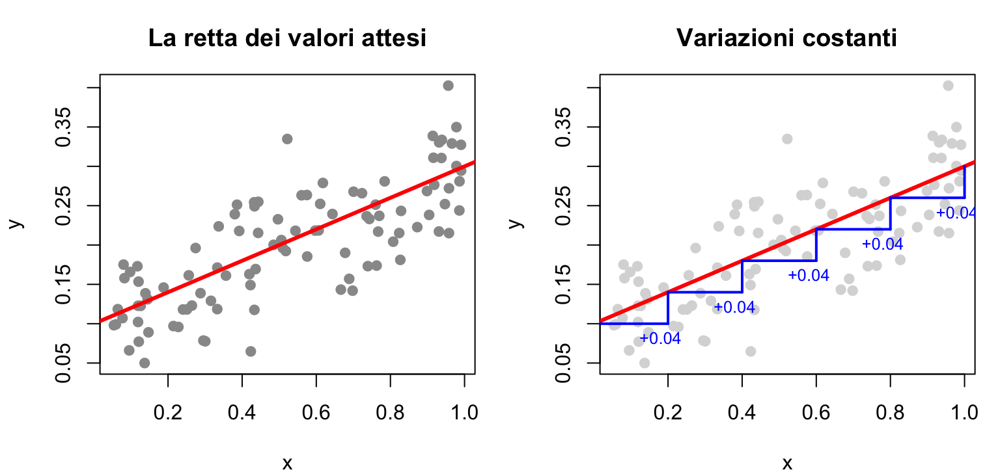
Il modello però non descrive solo la media: attorno a ciascun valore atteso c’è variabilità — i punti si disperdono intorno alla retta. Per descriverla servono le distribuzioni di probabilità.
1.2 Le distribuzioni di probabilità
I modelli non riproducono mai esattamente i dati: prevedono il valore medio della risposta dati i predittori. Le distribuzioni di probabilità servono proprio a questo:
caratterizzare la variabilità che resta dopo aver previsto la media;
quantificare l’incertezza nelle stime dei parametri del modello.
Una distribuzione di probabilità descrive tutti i valori che una variabile casuale \(Y\) può assumere, con le probabilità associate, dati certi parametri:
\[
f(y \mid \boldsymbol{\theta})
\]
dove:
\(y\) è un valore specifico;
\(\boldsymbol{\theta}\) è un vettore di parametri (es. \(\mu\), \(\sigma^2\));
\(f(\cdot)\) è la funzione di probabilità.
La forma che prende \(f\) dipende dal tipo di variabile:
per le variabili casuali continue (tempo, peso, temperatura, …) \(f\) è una funzione di densità di probabilità (PDF, probability density function): \(f(y \mid \boldsymbol{\theta})\) è la densità di probabilità in \(y\) — non una probabilità! Per un valore specifico, infatti, \(P(Y = y) = 0\);
per le variabili casuali discrete (conteggi, esiti binari, …) \(f\) è una funzione di massa di probabilità (PMF, probability mass function): \(P(Y = y \mid \boldsymbol{\theta})\) è la probabilità di osservare esattamente \(y\). Ad esempio, \(P(Y = 3) = 0.25\) significa che c’è il 25% di probabilità di ottenere proprio 3.
Codice del grafico
par(mfrow =c(2, 2), mar =c(4, 4, 3, 1))curve(dnorm(x, 0, 1), from =-4, to =4, lwd =2,xlab ="y", ylab ="f(y)", main ="Normale (PDF)")curve(dgamma(x, shape =2, rate =1), from =0, to =8, lwd =2,xlab ="y", ylab ="f(y)", main ="Gamma (PDF)")k <-0:10plot(k, dpois(k, lambda =3), type ="h", lwd =2,xlab ="y", ylab ="P(Y = y)", main ="Poisson (PMF)")points(k, dpois(k, lambda =3), pch =19)plot(k, dbinom(k, size =10, prob =0.4), type ="h", lwd =2,xlab ="y", ylab ="P(Y = y)", main ="Binomiale (PMF)")points(k, dbinom(k, size =10, prob =0.4), pch =19)
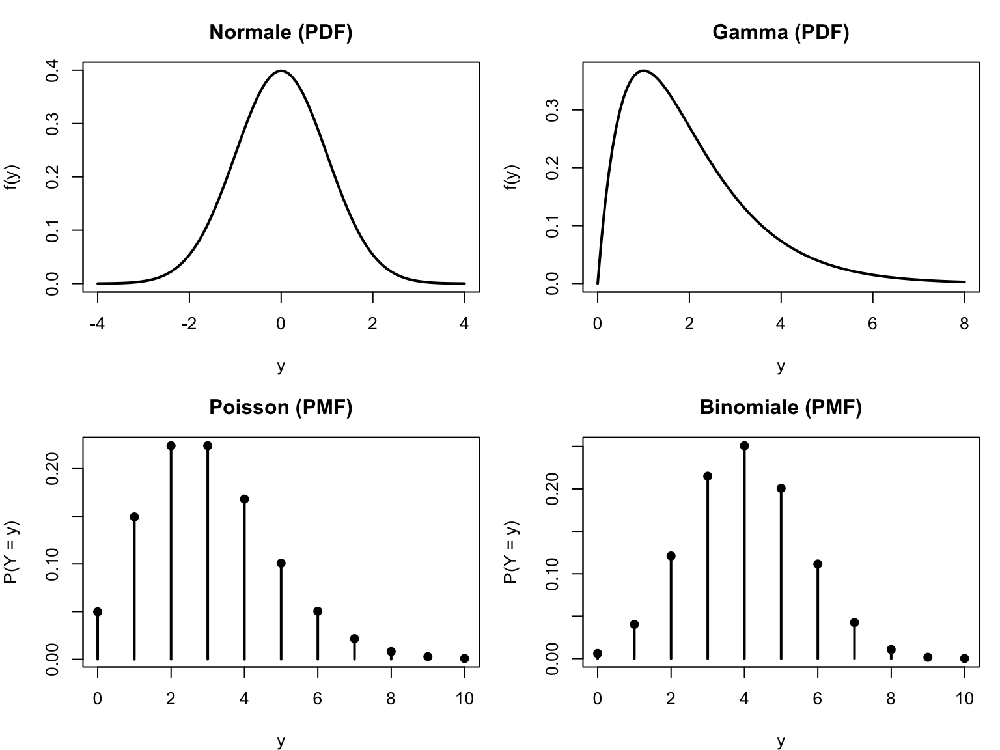
Tre quantità ci accompagneranno per tutto il corso:
il valore atteso (media), \(E[Y] = \mu\): la media di lungo periodo di \(Y\) sotto la sua distribuzione;
il valore atteso condizionato, \(E[Y \mid X] = \mu(X)\): la media della risposta per un valore fissato del predittore\(X = x\);
la varianza, \(\mathrm{Var}(Y)\) (o, nella regressione, \(\mathrm{Var}(Y \mid X)\)): quanto i valori variano attorno alla media (in generale, o per un dato \(x\)).
Nei modelli lineari normali (e nei modelli lineari generalizzati) i predittori entrano, di norma, sulla media della distribuzione.
Le definizioni di valore atteso e varianza sono universali, ma come si calcolano — e a che cosa sono uguali — dipende dai parametri della distribuzione. Per una distribuzione normale \(Y \sim \mathcal{N}(\mu, \sigma^2)\) i parametri sono esattamente la media e la varianza:
valore atteso (media): \(E[Y] = \mu\);
varianza: \(\mathrm{Var}(Y) = \sigma^2\).
1.3 La distribuzione normale
La distribuzione normale ha due parametri, \(\mu\) (media) e \(\sigma^2\) (varianza):
supporto: \((-\infty, +\infty)\) — qualunque valore reale è possibile;
media = moda = mediana;
media (valore atteso): \(\mu\);
varianza: \(\sigma^2\);
indipendenza tra media e varianza: cambiare la media non cambia la varianza.
Le misure del mondo reale non sono automaticamente normali: la normalità è una scelta di modellazione. Scegliere la distribuzione per i propri dati significa chiedersi:
supporto: quali valori sono possibili per la mia variabile?
media: quale valore prevedere, in media?
varianza: quanta variabilità attorno alla media?
relazione media–varianza: la varianza cambia al variare della media?
GLM
Per la normale la risposta è no: media e varianza sono parametri separati e indipendenti. Per altre distribuzioni, invece…
Distribuzione
Supporto
media: \(E[Y]\)
varianza: \(\mathrm{Var}(Y)\)
Normale: \(f(y \mid \mu,\sigma^2)\)
\(y \in \mathbb{R}\)
\(\mu\)
\(\sigma^2\)
Gamma: \(f(y \mid \alpha,\lambda)\)
\(y \in (0,\infty)\)
\(\alpha/\lambda\)
\(\alpha/\lambda^2\)
Binomiale: \(f(y \mid n,p)\)
\(y \in \{0,1,\dots,n\}\)
\(np\)
\(np(1-p)\)
Poisson: \(f(y \mid \lambda)\)
\(y \in \{0,1,2,\dots\}\)
\(\lambda\)
\(\lambda\)
Notate la colonna della varianza: per la Binomiale e la Poisson la varianza dipende dalla media, per la Normale no. Per esempio per la Poisson: spostando la media da 2 a 10 la distribuzione si “allarga” da sola — media e varianza viaggiano insieme (sono entrambe uguali a \(\lambda\)).
Codice del grafico
par(mfrow =c(1, 2), mar =c(4, 4, 3, 1))kk <-0:22plot(kk, dpois(kk, 2), type ="h", lwd =2, ylim =c(0, 0.28),xlab ="y", ylab ="P(Y = y)", main ="Poisson, media = 2")plot(kk, dpois(kk, 10), type ="h", lwd =2, ylim =c(0, 0.28),xlab ="y", ylab ="P(Y = y)", main ="Poisson, media = 10")
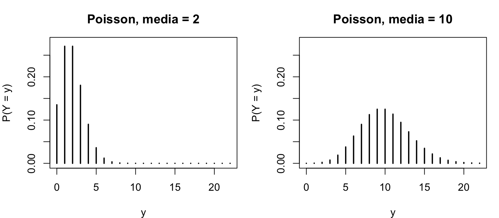
Con la distribuzione normale possiamo allora scrivere il modello di regressione in due modi equivalenti. Il primo mette i predittori sulla media della distribuzione:
s <-0.05# ampiezza delle campane normalicampana <-function(x0, y0) { # disegna una normale "in piedi" in (x0, y0) yg <-seq(y0 -3* s, y0 +3* s, length.out =80) d <-dnorm(yg, y0, s); d <- d /max(d) *0.07polygon(c(x0, x0 + d, x0), c(yg[1], yg, yg[80]),col =adjustcolor("blue", 0.25), border ="blue")}par(mfrow =c(1, 2), mar =c(4, 4, 3, 1))plot(x_oss, y_oss, pch =19, col ="grey60", xlim =c(0, 1.1),ylim =c(-0.06, 0.48), xlab ="x", ylab ="y",main ="Distribuzione della risposta")abline(a =0.1, b =0.2, col ="red", lwd =2)for (i inseq_along(xs)) campana(xs[i], mu[i])points(xs, mu, pch =19, col ="red")e_oss <- y_oss - (0.1+0.2* x_oss)plot(x_oss, e_oss, pch =19, col ="grey60", xlim =c(0, 1.1),ylim =c(-0.2, 0.2), xlab ="x", ylab =expression(epsilon == y -hat(y)),main ="Distribuzione degli errori")abline(h =0, col ="red", lwd =2)for (i inseq_along(xs)) campana(xs[i], 0)points(xs, rep(0, 6), pch =19, col ="red")
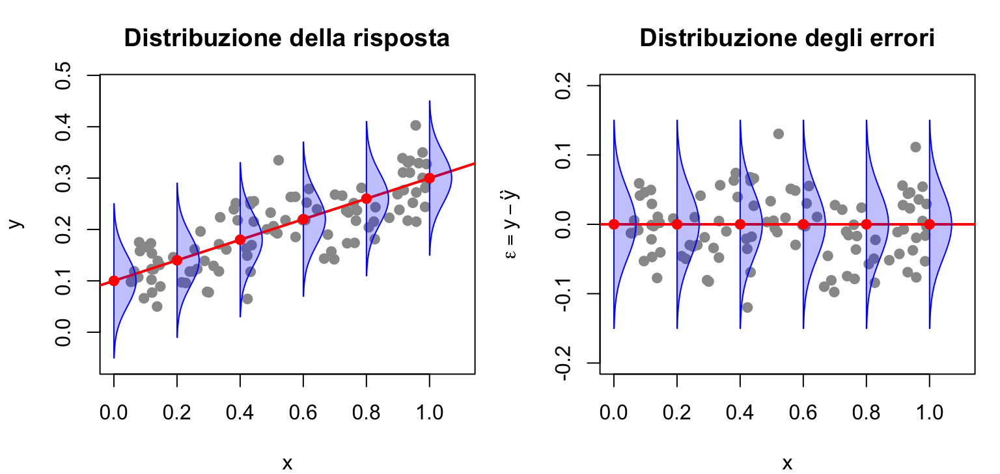
A sinistra la normale descrive la risposta attorno alla retta; a destra descrive gli errori attorno allo zero: sono due modi di esprimere la stessa assunzione di modellazione.
1.4 Le assunzioni del modello di regressione
Perché le stime e le inferenze del modello siano valide, il modello di regressione si fonda su alcune assunzioni. Per capire di che cosa parlano, partiamo dal loro oggetto comune: gli errori, cioè le distanze verticali tra i dati osservati e la retta del modello.
Codice del grafico
set.seed(4)xe <-1:12ye <-2+0.8* xe +rnorm(12, 0, 1.6)me <-lm(ye ~ xe)plot(xe, ye, pch =19, col ="grey30", xlab ="x", ylab ="y")abline(me, col ="blue", lwd =2)segments(xe, ye, xe, fitted(me), col ="red") # gli errori: distanze verticalii <-9# ne evidenziamo unotext(xe[i] +0.2, (ye[i] +fitted(me)[i]) /2,expression(epsilon[i]), col ="red", pos =4)
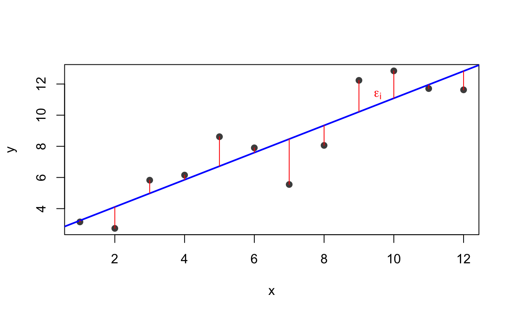
Ogni segmento rosso è un errore: di quanto il dato osservato si discosta dal valore atteso sulla retta. (A rigore l’errore si misura dalla retta vera; quando la retta viene stimata dai dati, quella distanza si chiama residuo — è la stessa idea, e la calcoleremo nella Sezione 2.4.)
Le cinque assunzioni dicono, ciascuna, qualcosa su come devono comportarsi questi segmenti. Accanto a ognuna trovate un grafico con dati simulati: a sinistra l’assunzione rispettata, a destra violata.
1. Indipendenza tra \(X\) ed errore. La variabile \(X\) e l’errore sono indipendenti nella popolazione: i predittori non contengono informazione sull’errore.
Codice del grafico
set.seed(1)x <-runif(80, 0, 10)e_ok <-rnorm(80, 0, 1.5) # errore indipendente da Xe_no <-0.7* (x -5) +rnorm(80, 0, 1.5) # errore correlato con Xpar(mfrow =c(1, 2), mar =c(4, 4, 3, 1))plot(x, e_ok, pch =19, col ="grey40", xlab ="X", ylab =expression(epsilon),main ="Errore indipendente da X")abline(h =0, lty =2)plot(x, e_no, pch =19, col ="grey40", xlab ="X", ylab =expression(epsilon),main ="Errore correlato con X")abline(h =0, lty =2)abline(lm(e_no ~ x), col ="red", lwd =2)
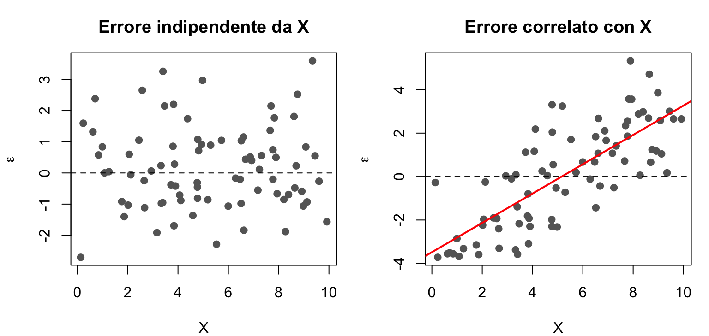
A destra gli errori tendono a essere negativi per \(X\) piccolo e positivi per \(X\) grande (linea rossa).
2. Indipendenza degli errori. Ogni coppia di errori \(\epsilon_i\) e \(\epsilon_j\) è indipendente, per \(i \neq j\): l’errore di un’osservazione non dice nulla sull’errore di un’altra.
Codice del grafico
set.seed(2)e_ind <-rnorm(80) # errori indipendentie_auto <-numeric(80) # errori autocorrelati:for (i in2:80) e_auto[i] <-0.9* e_auto[i -1] +rnorm(1, 0, 0.5)par(mfrow =c(1, 2), mar =c(4, 4, 3, 1))plot(e_ind, type ="b", pch =19, col ="grey40", cex =0.8,xlab ="Ordine di osservazione", ylab =expression(epsilon),main ="Errori indipendenti")abline(h =0, lty =2)plot(e_auto, type ="b", pch =19, col ="grey40", cex =0.8,xlab ="Ordine di osservazione", ylab =expression(epsilon),main ="Errori autocorrelati")abline(h =0, lty =2)
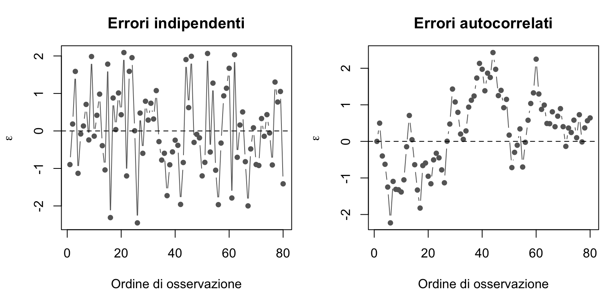
A sinistra ogni errore non dice nulla sui vicini; a destra ogni errore “somiglia” al precedente e i punti restano a lungo sopra o sotto lo zero.
3. Linearità. Il valore atteso dell’errore, dato il valore di \(X\), è zero: \(E(\epsilon_i) = E(\epsilon\,|\,x_i) = 0\). In altre parole, la relazione tra \(X\) e \(Y\) è davvero una retta: il modello non sbaglia sistematicamente in nessuna zona di \(X\).
Codice del grafico
set.seed(3)x <-runif(80, 0, 10)y_ok <-2+0.8* x +rnorm(80, 0, 1.5) # relazione linearey_no <-2+0.3* (x -5)^2+rnorm(80, 0, 1.2) # relazione curvilineapar(mfrow =c(1, 2), mar =c(4, 4, 3, 1))plot(x, y_ok, pch =19, col ="grey40", xlab ="X", ylab ="Y",main ="Relazione lineare")abline(lm(y_ok ~ x), col ="red", lwd =2)plot(x, y_no, pch =19, col ="grey40", xlab ="X", ylab ="Y",main ="Relazione non lineare")abline(lm(y_no ~ x), col ="red", lwd =2)
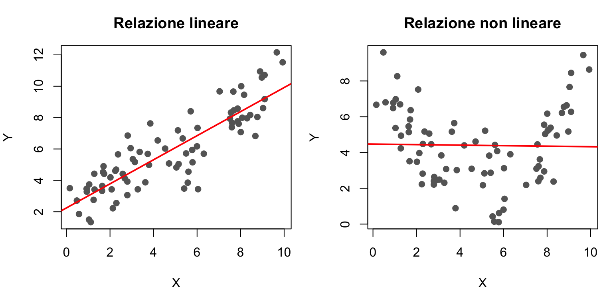
A sinistra la retta è una buona descrizione dei dati: sbaglia un po’ ovunque, ma senza una direzione precisa. A destra il modello sbaglia sistematicamente — sovrastima al centro e sottostima agli estremi di \(X\): il valore atteso dell’errore non è zero in ogni zona di \(X\).
4. Omoschedasticità (varianza costante). La varianza degli errori è la stessa per qualunque valore di \(X\): \(V(\epsilon\,|\,x_i) = \sigma^2\).
Codice del grafico
set.seed(4)x <-runif(80, 0, 10)y_omo <-2+0.8* x +rnorm(80, 0, 1.5) # varianza costantey_etero <-2+0.8* x +rnorm(80, 0, 0.2+0.35* x) # varianza crescente con Xpar(mfrow =c(1, 2), mar =c(4, 4, 3, 1))plot(x, y_omo, pch =19, col ="grey40", xlab ="X", ylab ="Y",main ="Varianza costante")abline(lm(y_omo ~ x), col ="red", lwd =2)plot(x, y_etero, pch =19, col ="grey40", xlab ="X", ylab ="Y",main ="Varianza crescente con X")abline(lm(y_etero ~ x), col ="red", lwd =2)
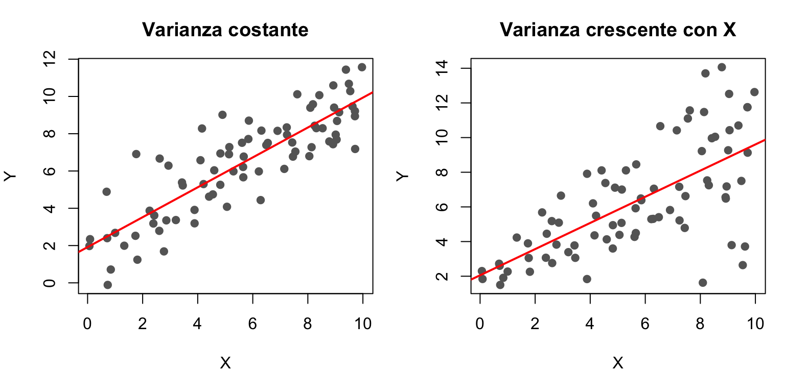
A sinistra la dispersione dei punti attorno alla retta è la stessa lungo tutto l’asse \(X\); a destra cresce al crescere di \(X\): è la tipica forma a imbuto dell’eteroschedasticità.
5. Normalità. Gli errori si distribuiscono normalmente: \(\epsilon_i \sim \mathcal{N}(0, \sigma^2)\).
In entrambi i pannelli la curva rossa è la normale con la stessa media e deviazione standard dei dati. A sinistra l’istogramma la segue bene; a destra gli errori sono asimmetrici e la curva normale non li descrive.
2 La regressione lineare semplice
Un modello con un solo predittore\(X\) e una variabile dipendente \(Y\) si chiama regressione lineare semplice.
2.1 Un solo predittore: quantitativo o categoriale
Con un solo predittore, la formulazione del modello cambia a seconda del tipo di variabile:
1. Se \(X\) è continua/quantitativa:
\[
Y = \beta_0 + \beta_1 X + \epsilon
\]
dove \(\beta_0\) è l’intercetta (il valore atteso di \(Y\) quando \(X = 0\)) e \(\beta_1\) è la pendenza (di quanto cambia, in media, \(Y\) quando \(X\) aumenta di una unità).
dove le \(D_j\) sono variabili dummy: “nuove variabili”, costruite dalla variabile categoriale, che valgono 1 se l’osservazione appartiene a una certa categoria e 0 altrimenti.
Concretamente, è così che R ricodifica un factor:
gruppo <-factor(c("A", "A", "B", "C", "B", "C")) # una categoriale a 3 livellidata.frame(gruppo, model.matrix(~ gruppo))# le due dummy costruite da R
gruppo X.Intercept. gruppoB gruppoC
1 A 1 0 0
2 A 1 0 0
3 B 1 1 0
4 C 1 0 1
5 B 1 1 0
6 C 1 0 1
R crea due dummy, gruppoB e gruppoC; la categoria A (la prima, in ordine alfabetico) è quella di riferimento e non ha una sua colonna. Riga per riga: un’osservazione del gruppo A ha entrambe le dummy a 0, una del gruppo B ha gruppoB = 1, una del gruppo C ha gruppoC = 1. Le tre categorie restano così perfettamente distinte con sole due colonne.
In forma di modello, con \(k = 2\) categorie serve quindi una sola dummy, \[
Y = \beta_0 + \beta_1 D_1 + \epsilon,
\] mentre con \(k = 3\) categorie ne servono due, \[
Y = \beta_0 + \beta_1 D_1 + \beta_2 D_2 + \epsilon.
\]
Non dobbiamo occuparci noi della ricodifica: R la fa da sé quando il predittore è un factor. Quello che conta è capire il significato di quei numeri, per interpretare correttamente i coefficienti.
2.1.1 L’interpretazione dei parametri
Vediamo in dettaglio il caso più semplice, \(k = 2\), con un esempio: confrontiamo i punteggi raccolti in due tipi di esperimento, in laboratorio oppure online. Con la codifica treatment (quella di default in R) la categoria di riferimento è “lab”, quindi la dummy vale \(X = 0\) per gli esperimenti in laboratorio e \(X = 1\) per quelli online:
\[
y_i = \beta_0 + \beta_1 X_i + \epsilon_i
\]
Sostituendo i due valori della dummy, il modello si “sdoppia” in un’equazione per gruppo:
L’interpretazione dei parametri segue di conseguenza:
Parametro
Significato
\(\beta_0\)
valore atteso quando \(X = 0\) (laboratorio)
\(\beta_1\)
differenza: online \(-\) laboratorio
\(\beta_0 + \beta_1\)
valore atteso per gli esperimenti online
2.1.2 Esempio via simulazione
Scegliamo noi i valori veri di \(\beta_0\) e \(\beta_1\), costruiamo la dummy e generiamo i dati; poi stimiamo il modello e controlliamo di recuperare i parametri.
set.seed(23)k <-100# numero di osservazionib0 <-20# valore atteso in laboratoriob1 <-5# differenza: online - laboratoriotipo <-rep(c("lab", "online"), each = k /2)D <-ifelse(tipo =="lab", 0, 1) # codifica treatmentmu <- b0 + b1 * D # valori attesi dei due gruppihead(data.frame(tipo, D, mu)) #prime osservazioni
tipo D mu
1 lab 0 20
2 lab 0 20
3 lab 0 20
4 lab 0 20
5 lab 0 20
6 lab 0 20
tail(data.frame(tipo, D, mu)) #ultime
tipo D mu
95 online 1 25
96 online 1 25
97 online 1 25
98 online 1 25
99 online 1 25
100 online 1 25
df <-data.frame(tipo =factor(tipo), y_sim = y_sim)m_sim <-lm(y_sim ~ tipo, data = df) # lm = linear modelcoef(m_sim) # coefficienti del modello
(Intercept) tipoonline
20.219222 5.159521
Le stime recuperano i valori veri (\(\hat\beta_0 \approx 20\), \(\hat\beta_1 \approx 5\)), a meno dell’errore di campionamento.
La media del gruppo lab è \(\beta_0\), la differenza fino alla media del gruppo online è \(\beta_1\) (freccia blu); la linea tratteggiata è la media generale.
Codice del grafico
medie <-tapply(y_sim, tipo, mean)plot(jitter(D, amount =0.06), y_sim, pch =19, col ="grey60",xlim =c(-0.5, 1.5), xaxt ="n", xlab ="", ylab ="y")axis(1, at =c(0, 1), labels =c("lab (X = 0)", "online (X = 1)"))segments(c(-0.2, 0.8), medie, c(0.2, 1.2), medie, col ="red", lwd =3)abline(h =mean(medie), lty =2, col ="grey40") # media generalearrows(1.35, medie[1], 1.35, medie[2], code =3, length =0.08,col ="blue", lwd =2)text(1.44, mean(medie), expression(beta[1]), col ="blue")text(-0.38, medie[1], expression(beta[0]), col ="red")text(0.57, medie[2], expression(beta[0] + beta[1]), col ="red")
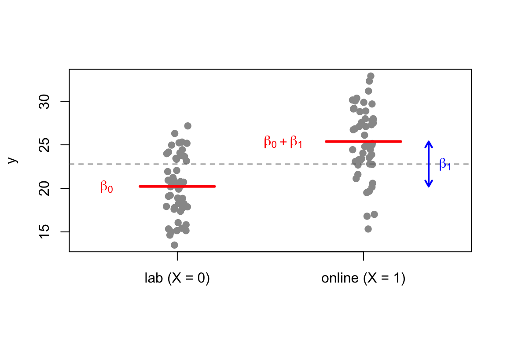
Dalle stime possiamo ricostruire le medie dei due gruppi con una matrice di contrasti, che esprime le medie come combinazioni lineari dei parametri:
C <-rbind(c(1, 0), c(1, 1))B <-coef(m_sim)C %*% B # equivale a: B[1] e B[1] + B[2]
[,1]
[1,] 20.21922
[2,] 25.37874
tapply(y_sim, tipo, mean) # verifica: le medie campionarie dei gruppi
lab online
20.21922 25.37874
Esiste anche una parametrizzazione alternativa: togliere l’intercetta dalla formula (con 0 +), così R stima direttamente una media per ciascun gruppo:
Codice del grafico
medie <-tapply(y_sim, tipo, mean)plot(jitter(D, amount =0.06), y_sim, pch =19, col ="grey60",xlim =c(-0.5, 1.5), xaxt ="n", xlab ="", ylab ="y")axis(1, at =c(0, 1), labels =c("lab (X = 1)", "online (X = 1)"))segments(c(-0.2, 0.8), medie, c(0.2, 1.2), medie, col ="red", lwd =3)abline(h =mean(medie), lty =2, col ="grey40") # media generaletext(-0.38, medie[1], expression(beta[0][lab]), col ="red")text(0.57, medie[2], expression(beta[0][online]), col ="blue")
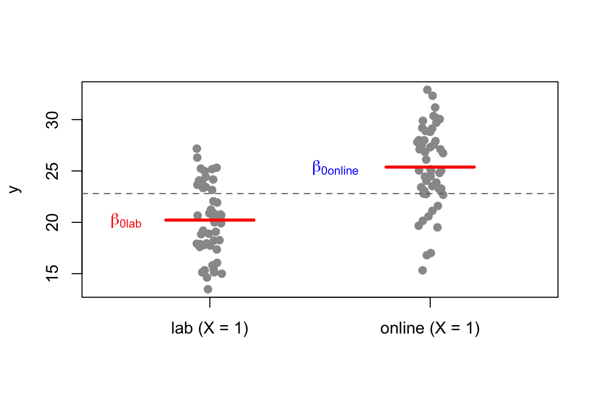
coef(lm(y_sim ~0+ tipo, data = df))
tipolab tipoonline
20.21922 25.37874
Stesso modello, parametri diversi: ora i coefficienti sono le due medie.
Le due dummy funzionano come interruttori on/off: per ogni osservazione una sola è accesa (1) e seleziona la media del suo gruppo, l’altra è spenta (0).
Abbiamo 434 osservazioni e 5 variabili. Notate che mom_hs e mom_work ora sono factor: è così che R sa che deve trattarle come categoriali (e costruire le dummy al posto nostro).
✏️ Esercizio 1 — Esplorare i dati
Prima di stimare qualsiasi modello, è buona pratica guardare i dati.
quante madri sono diplomate e quante no?
calcolate media e deviazione standard di kid_score;
disegnate l’istogramma di kid_score per il gruppo madri diplomate vs. no: come descrivereste le distribuzioni?
Soluzione — Esercizio 1
table(kidiq$mom_hs)
0 1
93 341
mean(kidiq$kid_score)
[1] 86.79724
sd(kidiq$kid_score)
[1] 20.41069
g0 <- kidiq$kid_score[kidiq$mom_hs ==0]hist(g0, main ="", xlab ="Punteggio del bambino, madri non diplomate")
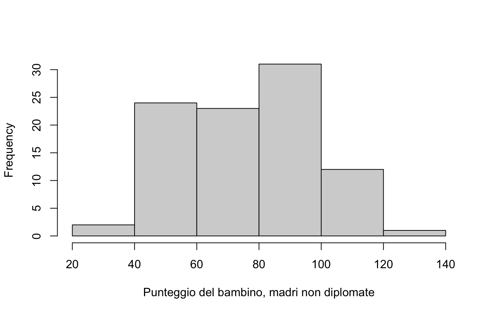
mean(g0)
[1] 77.54839
sd(g0)
[1] 22.5738
g1 <- kidiq$kid_score[kidiq$mom_hs ==1]hist(g1, main ="", xlab ="Punteggio del bambino, madri diplomate")
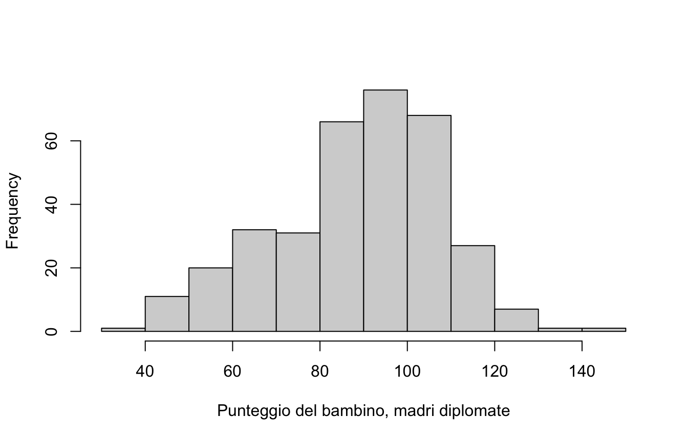
mean(g1)
[1] 89.31965
sd(g1)
[1] 19.04948
2.3 Un predittore numerico
Vogliamo valutare se il QI della madre è predittivo del punteggio del bambino. Stimiamo il modello con la funzione lm() (linear model), la cui sintassi è lm(risposta ~ predittore, data = dati):
m1 <-lm(kid_score ~ mom_iq, data = kidiq)plot(kid_score ~ mom_iq, data = kidiq,xlab ="QI della madre", ylab ="Punteggio del bambino")abline(m1, col ="red", lwd =2)
I coefficienti stimati sono:
coef(m1)
(Intercept) mom_iq
25.7997778 0.6099746
L’equazione di regressione è dunque
\[
\hat{Y} = 25.8 + 0.61 X
\]
dove il “cappello” su \(Y\) indica che si tratta dei valori previsti dal modello.
Come si leggono i coefficienti?
\(\beta_1 = 0.61\): per ogni punto di QI in più della madre, il punteggio atteso del bambino aumenta in media di 0.61 punti;
\(\beta_0 = 25.8\): è il punteggio atteso di un bambino la cui madre ha QI pari a zero. Un valore privo di senso! L’intercetta serve al modello, ma non sempre ha un’interpretazione sostantiva: per renderla interpretabile si può centrare il predittore (es. mom_iq - 100), così l’intercetta diventa il punteggio atteso per una madre con QI = 100.
kidiq$mom_iq_s <- kidiq$mom_iq -100# QI centrato sul valore 100
Codice
par(mfrow =c(1, 2), mar =c(4, 4, 3, 1))hist(kidiq$mom_iq, main ="mom_iq", xlab ="QI della madre")abline(v =100, col ="red", lwd =2, lty =2)hist(kidiq$mom_iq_s, main ="mom_iq - 100", xlab ="QI centrato")abline(v =0, col ="red", lwd =2, lty =2)
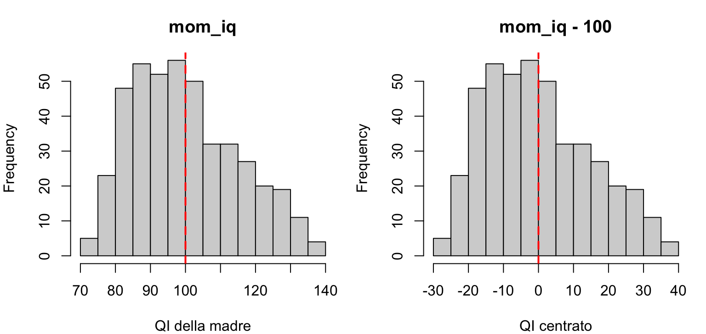
La distribuzione è identica: abbiamo solo spostato lo zero della scala (linea rossa) nel punto più sensato, il QI medio.
mcen <-lm(kid_score ~ mom_iq_s, data = kidiq)coef(mcen)
(Intercept) mom_iq_s
86.7972350 0.6099746
Come si leggono i coefficienti?
E se fosse…
kidiq$mom_iq_s2 <- (kidiq$mom_iq -100)/10
mcen <-lm(kid_score ~ mom_iq_s2, data = kidiq)coef(mcen)
(Intercept) mom_iq_s2
86.797235 6.099746
2.3.1 Il summary() del modello
Prima di proseguire, guardiamo tutto quello che R sa dirci su m1, con un solo comando:
summary(m1)
Call:
lm(formula = kid_score ~ mom_iq, data = kidiq)
Residuals:
Min 1Q Median 3Q Max
-56.753 -12.074 2.217 11.710 47.691
Coefficients:
Estimate Std. Error t value Pr(>|t|)
(Intercept) 25.79978 5.91741 4.36 1.63e-05 ***
mom_iq 0.60997 0.05852 10.42 < 2e-16 ***
---
Signif. codes: 0 '***' 0.001 '**' 0.01 '*' 0.05 '.' 0.1 ' ' 1
Residual standard error: 18.27 on 432 degrees of freedom
Multiple R-squared: 0.201, Adjusted R-squared: 0.1991
F-statistic: 108.6 on 1 and 432 DF, p-value: < 2.2e-16
Data l’osservazione empirica \(y_i\), possiamo individuare tre tipi di deviazione o scarti:
lo scarto del punto osservato \(y_i\) dalla media dei punteggi \(\bar{y}\): \(\;y_i - \bar{y}\);
lo scarto del punto teorico \(\hat{y}_i\) (sulla retta) dalla media \(\bar{y}\): \(\;\hat{y}_i - \bar{y}\);
lo scarto del punto osservato \(y_i\) dal suo corrispondente teorico sulla retta di regressione: \(\;y_i - \hat{y}_i\) — questo è il residuo.
Codice
par(mfrow =c(1, 3), mar =c(4, 4, 3, 1))titoli <-c(expression(y[i] -bar(y)),expression(hat(y)[i] -bar(y)),expression(y[i] -hat(y)[i]))for (tipo in1:3) {plot(ParSty, ChildBeh, pch =19, col ="grey40", main = titoli[tipo])abline(h =mean(ChildBeh), lty =2) # media di Yabline(mod, col ="blue", lwd =2) # retta di regressioneif (tipo ==1) segments(ParSty, mean(ChildBeh), ParSty, ChildBeh, col ="red")if (tipo ==2) segments(ParSty, mean(ChildBeh), ParSty, fitted(mod), col ="red")if (tipo ==3) segments(ParSty, fitted(mod), ParSty, ChildBeh, col ="red")}
Nel primo pannello gli scarti ignorano completamente il modello (distanze dalla media); nel secondo ci sono le distanze spiegate dalla retta; nel terzo ciò che resta: i residui.
In R i residui di un modello si ottengono con residuals():
Call:
lm(formula = kid_score ~ mom_iq, data = kidiq)
Residuals:
Min 1Q Median 3Q Max
-56.753 -12.074 2.217 11.710 47.691
Coefficients:
Estimate Std. Error t value Pr(>|t|)
(Intercept) 25.79978 5.91741 4.36 1.63e-05 ***
mom_iq 0.60997 0.05852 10.42 < 2e-16 ***
---
Signif. codes: 0 '***' 0.001 '**' 0.01 '*' 0.05 '.' 0.1 ' ' 1
Residual standard error: 18.27 on 432 degrees of freedom
Multiple R-squared: 0.201, Adjusted R-squared: 0.1991
F-statistic: 108.6 on 1 and 432 DF, p-value: < 2.2e-16
Il parametro \(\sigma\) esprime la variabilità dei residui (Sezione 1.3).
sigma(m1)
[1] 18.26612
er <-residuals(m1)sd(er)
[1] 18.24502
# n - k - 1 (obs, parametri) = 432 dfsqrt((sum((er-mean(er))^2))/(length(er)-1-1))
[1] 18.26612
Nel modello m1, \(\sigma \approx 18\) significa che il modello predice il punteggio del bambino con un’accuratezza media di circa 18 punti: di tanto, in media, i punteggi osservati si discostano da quelli attesi.
Visivamente, \(\sigma\) è l’ampiezza della banda attorno alla retta: se gli errori sono normali, la banda retta \(\pm\sigma\) contiene circa il 68% dei punti (e \(\pm 2\sigma\) circa il 95%).
Codice del grafico
plot(kid_score ~ mom_iq, data = kidiq, pch =19, col ="grey70",xlab ="QI della madre", ylab ="Punteggio del bambino")xx <-seq(min(kidiq$mom_iq), max(kidiq$mom_iq), length.out =100)yy <-coef(m1)[1] +coef(m1)[2] * xxpolygon(c(xx, rev(xx)), c(yy -2*sigma(m1), rev(yy +2*sigma(m1))),col =adjustcolor("red", 0.15), border =NA)abline(m1, col ="red", lwd =2)
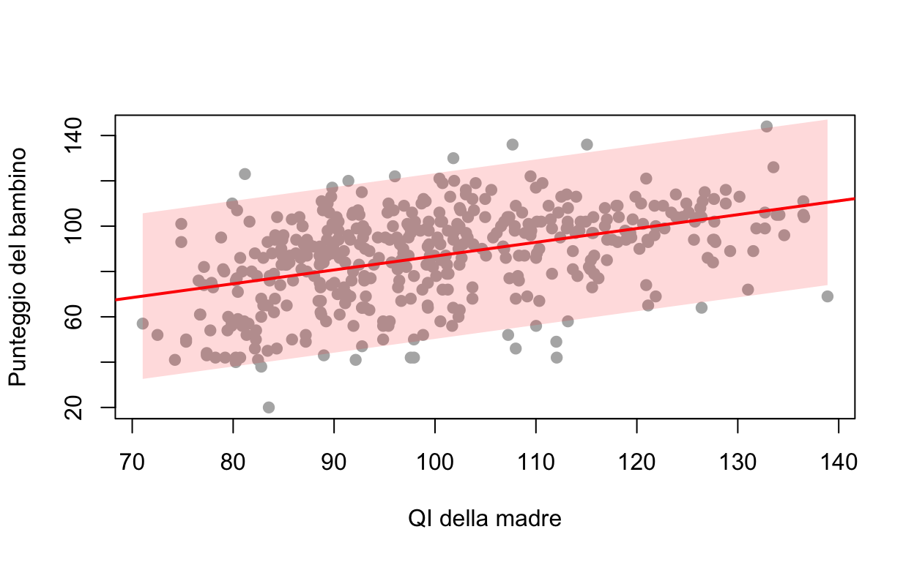
L’errore standard: quanto varia una stima
Attenzione a non confondere due variabilità diverse. La \(\sigma\) appena vista misura quanto i dati si disperdono attorno alla retta. Ma a noi interessa anche un’altra cosa: quanto varierebbe la stima (un coefficiente, una media) se rifacessimo lo studio su un nuovo campione. Questa seconda variabilità è l’errore standard della stima.
Prendiamo il caso più semplice, una media. Immaginiamo di estrarre tanti campioni — stesso \(n\), stessa popolazione — e di calcolare ogni volta la media: otteniamo una distribuzione di medie, la distribuzione campionaria della media.
Codice del grafico
set.seed(111)medie <-replicate(10000, mean(rnorm(50, mean =10, sd =2))) # 10000 medie, n = 50hist(medie, breaks =40, col ="grey85", xlab =expression(bar(x)),main ="Distribuzione campionaria della media")abline(v =10, col ="red", lwd =2) # la media vera della popolazione
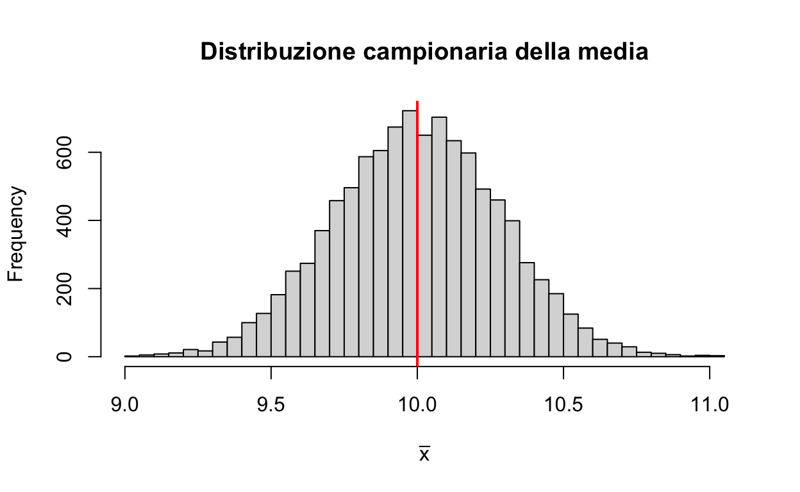
sd(medie) # quanto variano le medie da campione a campione = errore standard
[1] 0.2837447
Le medie campionarie si dispongono attorno al valore vero (10), e la loro deviazione standard (qui \(\approx 0.28\)) è proprio l’errore standard della media. Non serve simulare ogni volta: per la media c’è la formula \[
\text{SE}_{\bar x} = \frac{s}{\sqrt{n}},
\] il rapporto tra la deviazione standard del campione e la radice di \(n\).
sd(rnorm(50, mean =10, sd =2))/sqrt(50)
[1] 0.2936348
# con sigma noto (= 2): sigma / sqrt(n) 2/sqrt(50)
[1] 0.2828427
ogni stima ha il suo errore standard — non solo la media, ma anche \(\hat\beta_0\), \(\hat\beta_1\), ogni valore previsto \(\hat y_0\). È il “\(\pm\) errore standard” di ogni intervallo.
l’errore standard si restringe al crescere di \(n\) (c’è \(\sqrt{n}\) al denominatore).
La formula usa \(s\), la deviazione standard stimata dal campione, non la \(\sigma\) vera della popolazione (che non conosciamo).
2.4.2 Precisione delle stime, accuratezza delle previsioni
La banda \(\pm\sigma\) appena vista riguarda le previsioni: quanto una nuova osservazione si discosterà dalla retta. Ma nel modello convive una seconda incertezza, di natura diversa: quella sulla retta stessa, cioè sulle stime dei coefficienti (i loro errori standard). Distinguerle è fondamentale:
la banda di confidenza risponde a “dove sta la retta vera?” — è l’incertezza sul valore atteso\(E(Y \mid x)\). Dipende dagli errori standard dei \(\hat\beta\) e si stringe all’aumentare di \(n\): è la precisione di stima degli effetti;
la banda di previsione risponde a “dove cadrà la prossima osservazione?”. Oltre all’incertezza sulla retta contiene \(\sigma\), e per quanto \(n\) cresca non potrà mai stringersi sotto \(\pm\sigma\): è l’accuratezza delle previsioni.
In R si ottengono entrambe con predict():
nuovi <-data.frame(mom_iq =seq(70, 140, length.out =100))ic <-predict(m1, newdata = nuovi, interval ="confidence") # banda di confidenzaip <-predict(m1, newdata = nuovi, interval ="prediction") # banda di previsionehead(ic, 3)
Il punteggio medio dei bambini di madri con QI = 100 è stimato con grande precisione (circa \(\pm 1.7\) punti); il punteggio del singolo bambino resta incerto di circa \(\pm 36\) punti. Stessa retta, due incertezze diverse: la prima è la precisione con cui conosciamo gli effetti, la seconda è l’accuratezza con cui possiamo prevedere (dominata da \(\sigma\)).
Entrambi gli intervalli hanno la stessa struttura di tutti gli intervalli di confidenza:
dove \(\hat{y}_0 = \hat\beta_0 + \hat\beta_1 x_0\) è il valore previsto nel punto \(x_0\) che ci interessa, e \(t^*\) è il quantile della distribuzione \(t\) con \(n - k - 1\) gradi di libertà che lascia il 2.5% in ciascuna coda — in R, qt(0.975, df); con i nostri 432 gradi di libertà vale 1.97, praticamente l’1.96 della normale.
Quello che distingue le due bande è solo l’errore standard:
\[
\underbrace{\hat\sigma \sqrt{\frac{1}{n} + \frac{(x_0-\bar{x})^2}{\sum_i (x_i-\bar{x})^2}}}_{\text{banda di confidenza}}
\qquad\qquad
\underbrace{\hat\sigma \sqrt{\,1 + \frac{1}{n} + \frac{(x_0-\bar{x})^2}{\sum_i (x_i-\bar{x})^2}}}_{\text{banda di previsione}}
\]
\(\dfrac{1}{n}\) è l’incertezza sull’altezza della retta (sulla media generale di \(Y\)): con \(n\) grande la conosciamo quasi esattamente — questo termine si riduce al crescere del campione;
\(\dfrac{(x_0-\bar{x})^2}{\sum_i (x_i-\bar{x})^2}\) è l’incertezza sulla pendenza, che pesa tanto più quanto più \(x_0\) è lontano da \(\bar{x}\): la retta stimata “ruota” attorno al baricentro dei dati \((\bar{x}, \bar{y})\), e un piccolo errore di pendenza si amplifica man mano che ci si allontana dal centro. Ecco perché le bande sono più strette in \(\bar{x}\) e si allargano agli estremi. Anche questo termine si riduce al crescere di \(n\);
\(1\) compare solo nella banda di previsione: è la varianza del nuovo errore \(\epsilon_0\), in unità di \(\sigma^2\). Una nuova osservazione non cade sulla retta ma a distanza \(\epsilon_0 \sim \mathcal{N}(0, \sigma^2)\) da essa, e questa incertezza non dipende da \(n\).
Ricalcoliamo a mano gli intervalli per \(x_0 = 100\) e confrontiamoli con l’output di predict() qui sopra.
Da 40 a 434 osservazioni la banda di confidenza (rossa) si stringe vistosamente — più dati, effetti stimati con più precisione — mentre la banda di previsione (azzurra) resta praticamente uguale: sul singolo bambino comanda \(\sigma\).
2.5 Le devianze
Data l’osservazione empirica \(y_i\), possiamo individuare tre tipi di deviazione o scarti:
Codice
par(mfrow =c(1, 3), mar =c(4, 4, 3, 1))titoli <-c(expression(y[i] -bar(y)),expression(hat(y)[i] -bar(y)),expression(y[i] -hat(y)[i]))for (tipo in1:3) {plot(ParSty, ChildBeh, pch =19, col ="grey40", main = titoli[tipo])abline(h =mean(ChildBeh), lty =2) # media di Yabline(mod, col ="blue", lwd =2) # retta di regressioneif (tipo ==1) segments(ParSty, mean(ChildBeh), ParSty, ChildBeh, col ="red")if (tipo ==2) segments(ParSty, mean(ChildBeh), ParSty, fitted(mod), col ="red")if (tipo ==3) segments(ParSty, fitted(mod), ParSty, ChildBeh, col ="red")}
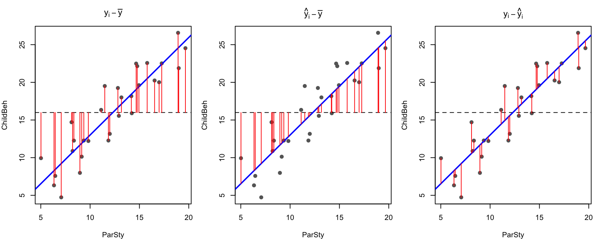
lo scarto del punto osservato \(y_i\) dalla media dei punteggi \(\bar{y}\): \(\;y_i - \bar{y}\);
lo scarto del punto teorico \(\hat{y}_i\) (sulla retta) dalla media \(\bar{y}\): \(\;\hat{y}_i - \bar{y}\);
lo scarto del punto osservato \(y_i\) dal suo corrispondente teorico sulla retta di regressione: \(\;y_i - \hat{y}_i\) — questo è il residuo.
Sommando i quadrati degli scarti otteniamo tre quantità:
Devianza totale: somma dei quadrati degli scarti delle osservazioni dalla media \[\text{SS}_{T} = \sum_i (y_i - \bar{y})^2\]
Devianza di regressione (o spiegata): somma dei quadrati degli scarti dei punti sulla retta dalla media \[\text{SS}_{R} = \sum_i (\hat{y}_i - \bar{y})^2\]
Devianza residua: somma dei quadrati degli scarti delle osservazioni dai punti sulla retta \[\text{SS}_{E} = \sum_i (y_i - \hat{y}_i)^2\]
ossia che la devianza totale è la somma delle altre due: \(\text{SS}_T = \text{SS}_R + \text{SS}_E\).
Ordinary Least Squares
L’algoritmo di stima dei parametri \(\beta_0\) e \(\beta_1\) (il metodo dei minimi quadrati, Ordinary Least Squares) ha come obiettivo proprio la minimizzazione della devianza residua: tra tutte le rette possibili, lm() sceglie quella che rende minima \(\sum_i (y_i - \hat{y}_i)^2\).
I segmenti rossi sono gli scarti dalla retta: la loro somma dei quadrati è la \(\text{SS}_E\) scritta in cima a ciascun pannello.
Codice del grafico
b1_cand <-c(0.4, 0.8, 1.6, coef(mod)[2]) # tre pendenze a mano + quella di lm()par(mfrow =c(2, 2), mar =c(4, 4, 3, 1))for (b1 in b1_cand) { b0 <-mean(ChildBeh) - b1 *mean(ParSty) # intercetta migliore, data la pendenza att <- b0 + b1 * ParSty # valori attesi con questa retta sse <-sum((ChildBeh - att)^2)plot(ParSty, ChildBeh, pch =19, col ="grey40",main =bquote(beta[1] == .(round(b1, 2)) ~","~ SS[E] == .(round(sse))))segments(ParSty, att, ParSty, ChildBeh, col ="red")abline(b0, b1, col ="blue", lwd =2)points(mean(ParSty), mean(ChildBeh), pch =18, cex =1.8) # baricentro}
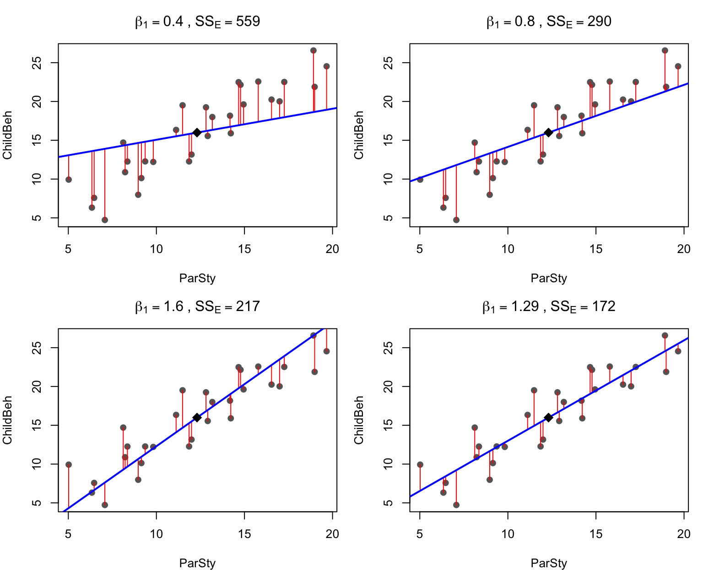
L’algortimo minimizza la \(\text{SS}_E\) rispetto a entrambi i parametri insieme. La superficie \(\text{SS}_E(\beta_0, \beta_1)\) è un “catino” con un unico fondo, e la stima dei minimi quadrati è il suo punto più basso:
Codice del grafico
b0g <-seq(-6, 14, length.out =100)b1g <-seq(0.2, 1.7, length.out =100)SSE2 <-matrix(NA, nrow =length(b0g), ncol =length(b1g))for (i inseq_along(b0g)) { # per ogni intercetta candidata...for (j inseq_along(b1g)) { # ...e ogni pendenza candidata: SSE2[i, j] <-sum((ChildBeh - b0g[i] - b1g[j] * ParSty)^2) }}par(mfrow =c(1, 2), mar =c(1, 1, 1, 1))persp(b0g, b1g, SSE2, theta =40, phi =22, expand =0.7,col ="lightblue", shade =0.35, border =NA,xlab ="beta0", ylab ="beta1", zlab ="SSE")par(mar =c(4, 4, 1, 1))contour(b0g, b1g, SSE2, labcex =0.7,levels =c(150, 250, 500, 1000, 2000, 4000, 8000, 16000),xlab =expression(beta[0]), ylab =expression(beta[1]))b1_fondo <-seq(0.2, 1.7, length.out =50) # pendenze candidateb0_fondo <-mean(ChildBeh) - b1_fondo *mean(ParSty) # le intercette migliorilines(b0_fondo, b1_fondo, lty =2) # il fondovalleb1c <-c(0.4, 0.8, 1.6) # le tre pendenze dei pannellib0c <-mean(ChildBeh) - b1c *mean(ParSty) # le loro intercette miglioripoints(b0c, b1c, pch =18, cex =1.4) # un punto = una retta candidatapoints(coef(mod)[1], coef(mod)[2], pch =19, col ="red", cex =1.4) # lm()
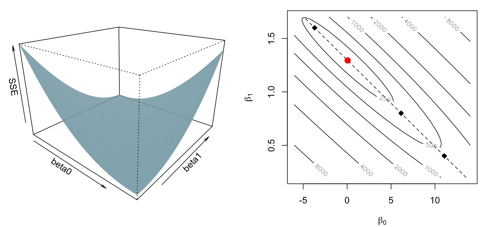
A sinistra lo spazio bidimensionale; a destra lo stesso visto dall’alto, a curve di livello. Il punto rosso è la coppia \((\hat\beta_0, \hat\beta_1)\) stimata da lm(): il fondo. Notate che la valle è stretta e obliqua: intercetta e pendenza si compensano (alzando la pendenza, l’intercetta migliore scende).
La linea tratteggiata è, per ogni pendenza, la sua intercetta migliore \(\beta_0 = \bar{y} - \beta_1\bar{x}\): ogni retta “sensata” passa per il baricentro dei dati.
Il fondo è il punto in cui la superficie \(S(\beta_0, \beta_1)\) è piatta in entrambe le direzioni: dove le sue due derivate parziali si annullano insieme.
cioè la codevianza di \(x\) e \(y\) (la somma dei prodotti degli scarti) divisa per la devianza di \(x\). Equivalentemente è la covarianza divisa per la varianza: i fattori \(1/(n-1)\) di entrambe si semplificano, e resta il rapporto tra le due somme.
Geometricamente, la formula \(\beta_0 = \bar{y} - \beta_1\bar{x}\) dice che la retta passa per il baricentro\((\bar{x}, \bar{y})\): l’intercetta è semplicemente la sua altezza a \(x = 0\).
Codice del grafico
xbar <-mean(ParSty); ybar <-mean(ChildBeh)b0 <-coef(mod)[1]; b1 <-coef(mod)[2]plot(ParSty, ChildBeh, pch =19, col ="grey75",xlim =c(-1.5, max(ParSty)), ylim =range(c(ChildBeh, b0)),xlab ="x", ylab ="y")abline(mod, col ="blue", lwd =2)abline(v =0, col ="grey85")segments(0, ybar, xbar, ybar, lty =3) # quota della media di yarrows(0, ybar, 0, b0, length =0.1, code =3, col ="red") # discesa di beta1 * xbarpoints(xbar, ybar, pch =18, cex =1.8) # baricentropoints(0, b0, pch =19, col ="forestgreen", cex =1.5) # intercettatext(xbar, ybar, expression(group("(", list(bar(x), bar(y)), ")")), pos =4, cex =0.9)text(0, b0, expression(beta[0]), pos =4, col ="forestgreen")text(0, (ybar + b0) /2, expression(beta[1] *bar(x)), pos =4, col ="red", cex =0.9)
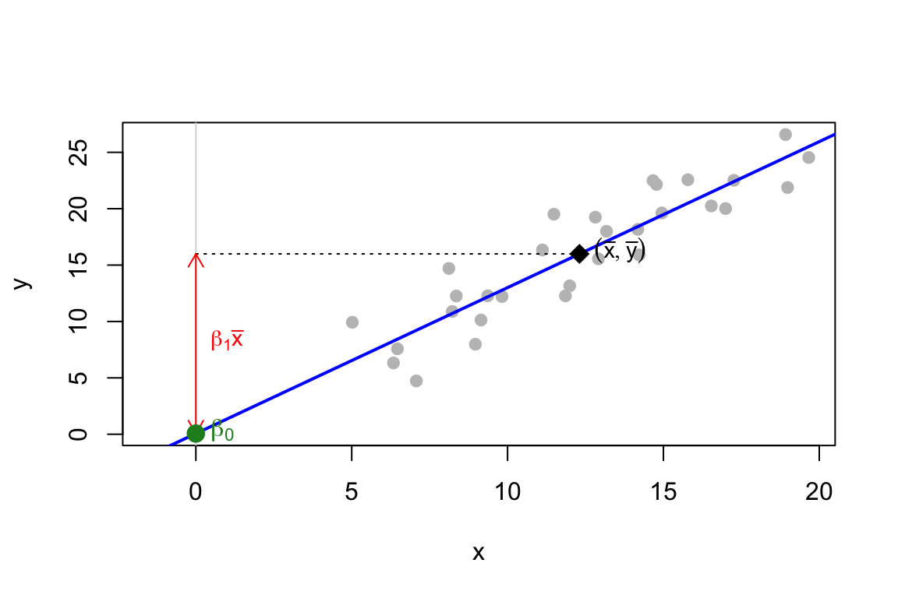
Se il predittore è centrato (\(\bar{x} = 0\)), il termine \(\beta_1\bar{x}\) si annulla qualunque sia la pendenza: l’intercetta migliore è \(\bar{y}\) per tutte le rette candidate.
Con il predittore centrato il fondovalle è verticale a \(\beta_0 = \bar{y}\): cambiare pendenza non sposta più l’intercetta migliore. E le curve di livello si allineano agli assi: intercetta e pendenza non si compensano più — le due stime diventano indipendenti.
Il fit del modello può essere riassunto sfruttando la relazione tra devianza residua e devianza totale:
La proporzione di variabilità spiegata dal modello nel suo complesso è l’\(R^2\). Quando il modello avrà più predittori, potremo scomporre la variabilità spiegata anche effetto per effetto (è l’\(\eta^2\): lo vedremo nella Sezione 3.2.1).
✏️ Esercizio 2 — Verificare la scomposizione della devianza
Torniamo al modello m1 (kid_score ~ mom_iq).
Calcolate i residui “a mano” come kidiq$kid_score - fitted(m1) e verificate che coincidono con residuals(m1).
Calcolate le tre devianze e verificate che \(\text{SS}_T = \text{SS}_R + \text{SS}_E\).
Calcolate \(R^2 = \text{SS}_R / \text{SS}_T\) e confrontatelo con summary(m1)$r.squared.
Caso 1: dipendenza funzionale perfetta. Tutti i punti giacciono esattamente sulla retta di regressione: tutte le differenze \(y_i - \hat{y}_i\) sono nulle, quindi la devianza residua è zero e la devianza totale coincide con quella di regressione. \(R^2 = 1\).
Caso 2: indipendenza. La retta di regressione coincide con la media di \(Y\) (pendenza nulla): sono nulle tutte le differenze \(\hat{y}_i - \bar{y}\), la devianza di regressione è zero e la devianza totale coincide con quella residua. \(R^2 \approx 0\).
set.seed(1)x <-runif(30, 5, 20)y_perf <-2+ x # caso 1: nessun errorey_indip <-rnorm(30, 10, 5) # caso 2: Y non dipende da Xpar(mfrow =c(1, 2), mar =c(4, 4, 3, 1))plot(x, y_perf, pch =19, main =expression(R^2==1), xlab ="X", ylab ="Y")abline(lm(y_perf ~ x), col ="red", lwd =2)plot(x, y_indip, pch =19, main =expression(R^2%~~%0), xlab ="X", ylab ="Y")abline(lm(y_indip ~ x), col ="red", lwd =2)abline(h =mean(y_indip), lty =2)
✏️ Esercizio 3 — Da che cosa dipende R²?
Simulate due dataset con la stessa relazione \(y = 2 + 0.5x + \epsilon\),
ma errori con deviazione standard diversa: \(\sigma = 0.5\) nel primo e \(\sigma = 2\) nel secondo.
Stimate i due modelli: le stime di \(\beta_1\) sono simili?
Confrontate gli \(R^2\). Che cosa concludete?
Soluzione — Esercizio 3
set.seed(123)n <-200x <-rnorm(n)y_preciso <-2+0.5* x +rnorm(n, 0, 0.5)y_rumoroso <-2+0.5* x +rnorm(n, 0, 2)mp <-lm(y_preciso ~ x)mr <-lm(y_rumoroso ~ x)summary(mp)
Call:
lm(formula = y_preciso ~ x)
Residuals:
Min 1Q Median 3Q Max
-1.23959 -0.32809 -0.01703 0.34019 1.25931
Coefficients:
Estimate Std. Error t value Pr(>|t|)
(Intercept) 2.02094 0.03529 57.27 <2e-16 ***
x 0.48537 0.03751 12.94 <2e-16 ***
---
Signif. codes: 0 '***' 0.001 '**' 0.01 '*' 0.05 '.' 0.1 ' ' 1
Residual standard error: 0.499 on 198 degrees of freedom
Multiple R-squared: 0.4582, Adjusted R-squared: 0.4555
F-statistic: 167.5 on 1 and 198 DF, p-value: < 2.2e-16
summary(mr)
Call:
lm(formula = y_rumoroso ~ x)
Residuals:
Min 1Q Median 3Q Max
-5.6693 -1.1845 0.1216 1.2860 4.9273
Coefficients:
Estimate Std. Error t value Pr(>|t|)
(Intercept) 2.0630 0.1367 15.088 < 2e-16 ***
x 0.4381 0.1453 3.015 0.00291 **
---
Signif. codes: 0 '***' 0.001 '**' 0.01 '*' 0.05 '.' 0.1 ' ' 1
Residual standard error: 1.934 on 198 degrees of freedom
Multiple R-squared: 0.04389, Adjusted R-squared: 0.03906
F-statistic: 9.089 on 1 and 198 DF, p-value: 0.002908
2.6 Il summary() spiegato
summary(m1)
Call:
lm(formula = kid_score ~ mom_iq, data = kidiq)
Residuals:
Min 1Q Median 3Q Max
-56.753 -12.074 2.217 11.710 47.691
Coefficients:
Estimate Std. Error t value Pr(>|t|)
(Intercept) 25.79978 5.91741 4.36 1.63e-05 ***
mom_iq 0.60997 0.05852 10.42 < 2e-16 ***
---
Signif. codes: 0 '***' 0.001 '**' 0.01 '*' 0.05 '.' 0.1 ' ' 1
Residual standard error: 18.27 on 432 degrees of freedom
Multiple R-squared: 0.201, Adjusted R-squared: 0.1991
F-statistic: 108.6 on 1 and 432 DF, p-value: < 2.2e-16
✏️ Prima di leggere oltre — Spiegate voi l’output
Coprite la lettura guidata qui sotto e provate a spiegare ogni voce dell’output: che cos’è? da dove viene? come si interpreta?
La lettura guidata, voce per voce:
Call: il promemoria di come il modello è stato specificato (formula e dati).
Residuals: la distribuzione dei residui (osservato − previsto). Se il modello è adeguato, mediana vicina a 0 e quartili circa simmetrici. Potete ricostruirla da soli: summary(residuals(m1)).
Estimate: le stime dei coefficienti, già viste con coef(): i valori che minimizzano la somma dei quadrati degli errori.
Std. Error: l’errore standard di ciascuna stima, cioè la sua incertezza: con campioni diversi otterremmo stime un po’ diverse, e l’errore standard ne quantifica la variabilità. È l’incertezza che genera la banda di confidenza vista nella Sezione 2.4.2.
t value e Pr(>|t|): la statistica \(t\) (stima / errore standard) e il relativo p-value per l’ipotesi nulla \(\beta = 0\), calcolato sulla distribuzione \(t\). Qui il test su mom_iq è significativo. Cosa significa?
Residual standard error (\(\sigma\)): è — quasi — la deviazione standard dei residui: l’unica differenza è che al denominatore, al posto di \(n - 1\), ci sono i gradi di libertà residui\(n - k - 1\), dove \(k\) è il numero di predittori (qui \(434 - 1 - 1 = 432\), i “432 degrees of freedom” dell’output). Vale circa 18.3 punti: di tanto, in media, il modello “sbaglia” le previsioni.
Multiple R-squared: la proporzione di variabilità di \(Y\) spiegata dal modello, qui circa il 20%. L’idea: si parte dalla variabilità totale di \(Y\) e si sottrae la parte che resta nei residui: è l’\(R^2\) definito nella
Adjusted R-squared: l’\(R^2\)corretto per la complessità del modello. Aggiungere predittori fa salire l’\(R^2\) anche quando non servono a nulla; la versione adjusted tiene conto di quante osservazioni (\(n\)) e quanti predittori (\(k\)) stiamo usando, e rende più equo il confronto tra modelli di complessità diversa. Con un solo predittore e molte osservazioni, come qui, i due valori quasi coincidono.
F-statistic: il test globale del modello contro il modello nullo (solo intercetta): ipotesi nulla “tutti i coefficienti, intercetta esclusa, sono zero”, alternativa “almeno uno è diverso da zero”.
2.6.1 Il summary() ricalcolato a mano
Per calcolare i quattro numeri serve sapere \(n\), \(k\) e due devianze ormai note (Sezione 2.5): la residua \(\text{SS}_E\) e la totale \(\text{SS}_T\):
n <-length(residuals(m1)) # numero di osservazionik <-length(coef(m1)) -1# numero di predittori (intercetta esclusa)SSE <-sum(residuals(m1)^2) # variabilità residuaSST <-sum((kidiq$kid_score -mean(kidiq$kid_score))^2) # variabilità totalec(sigma =sqrt(SSE / (n - k -1)), # devianza/... = sqrt(varianza)R2 =1- SSE / SST,R2adj =1- (SSE / SST) * (n -1) / (n - k -1), # penalizzo x k# rapporto SSR / SSE Fstat = ((SST - SSE) / k) / (SSE / (n - k -1)))
Confrontate con l’output di summary(m1) qui sopra: tornano tutti e quattro. Notate la logica comune: tutto ruota attorno al confronto tra quanta variabilità c’era in partenza (la devianza totale) e quanta ne resta dopo il modello (la devianza residua): summary() non fa che ricombinare le devianze della Sezione 2.5.
Perché si divide per \(k\) e per \(n-k-1\)? (i gradi di libertà)
I gradi di libertà: Il numero di pezzi di informazione davvero indipendenti che entrano in un calcolo.
Esempio noto: la varianza campionaria divide per \(n-1\), non per \(n\), perché per calcolare gli scarti \(y_i - \bar y\) hai prima stimato \(\bar y\)dagli stessi dati; noti \(\bar y\) e \(n-1\) scarti, l’ultimo è determinato (gli scarti sommano a zero). Regola generale: ogni parametro stimato dai dati consuma un grado di libertà.
La devianza spiegata \(\text{SS}_R\) vive nelle \(k\) “direzioni” aggiunte dai \(k\) predittori (le pendenze, oltre l’intercetta): ha \(k\) gradi di libertà.
I residui partono da \(n\) dati, ma per ottenere i previsti \(\hat y\) hai stimato \(k+1\) parametri (le \(k\) pendenze più l’intercetta). Ogni parametro è un vincolo sui residui: restano \(n-k-1\) informazioni libere. \(\text{SS}_E/(n-k-1)\) è la varianza residua \(\hat\sigma^2\).
I gradi di libertà si spezzano esattamente come le devianze: \[
\underbrace{(n-1)}_{\text{totale}} = \underbrace{k}_{\text{regressione}} + \underbrace{(n-k-1)}_{\text{residua}},
\] lo stesso schema di \(\text{SS}_T = \text{SS}_R + \text{SS}_E\).
Così \(\text{SS}_E/(n-k-1)\) è una stima non distorta di \(\sigma^2\) (dividere per \(n\) la sottostimerebbe: i residui sono resi artificialmente piccoli dall’adattamento). Sotto l’ipotesi nulla anche il numeratore stima \(\sigma^2\) → \(F \approx 1\); se il modello spiega davvero, il numeratore si gonfia mentre il denominatore resta una stima onesta del rumore → \(F\) grande.
✏️ Prova tu — I p-value con pt() e pf()
Manca solo un pezzo: i p-value. Anche quelli si ricalcolano a mano, con le funzioni di ripartizione pt() e pf().
Leggete dall’output di summary(m1) i valori che servono (\(t\) dell’intercetta = 4.36, \(t\) di mom_iq = 10.42, \(F\) = 108.6, gradi di libertà residui = 432) e:
ricalcolate il p-value di mom_iq con pt(). Attenzione: il test è a due code (l’effetto può essere in entrambe le direzioni), quindi la probabilità nella coda va raddoppiata;
fate lo stesso per l’intercetta e confrontate con Pr(>|t|);
ricalcolate il p-value della \(F\) con pf() (una coda sta volta).
verificate che \(t^2 = F\) per mom_iq. Perché qui i due test coincidono?
Soluzione — Prova tu
summary(m1)$coefficients # da qui leggiamo i valori di t
Estimate Std. Error t value Pr(>|t|)
(Intercept) 25.7997778 5.91741208 4.359977 1.627847e-05
mom_iq 0.6099746 0.05852092 10.423188 7.661950e-23
2*pt(c(4.36, 10.42), df =432, lower.tail =FALSE) # a-b: due code
[1] 1.627680e-05 7.869965e-23
pf(108.6, df1 =1, df2 =432, lower.tail =FALSE) # c: una coda sola
[1] 7.79544e-23
c(t2 =10.42^2, F =108.6) # d: con k = 1, F = t²
t2 F
108.5764 108.6000
a–b. I p-value coincidono con quelli del summary(). c. Una coda sola: la \(F\) è un rapporto di varianze, sempre positivo, e solo valori grandi sono evidenza contro \(H_0\). d. Con un solo predittore l’ipotesi globale “tutti i coefficienti sono zero” e l’ipotesi sul singolo coefficiente sono la stessa ipotesi: \(F = t^2\) e i due p-value coincidono.
✏️ Esercizio 4 — La vostra prima regressione
Stimate un modello in cui il punteggio del bambino è predetto dall’età della madre (mom_age).
Scrivete l’equazione di regressione stimata.
Come interpretate la pendenza?
Qual è il punteggio previsto per un bambino la cui madre ha 20 anni? E 30 anni?
Guardando \(R^2\), l’età della madre vi sembra un buon predittore?
Soluzione — Esercizio 4
m_age <-lm(kid_score ~ mom_age, data = kidiq)coef(m_age)
(Intercept) mom_age
70.9569209 0.6951862
summary(m_age)$r.squared
[1] 0.008463666
\(\hat{Y} = 70.96 + 0.70 \cdot \text{mom\_age}\).
Per ogni anno in più della madre, il punteggio atteso del bambino aumenta in media di 0.70 punti.
Possiamo calcolarli a mano oppure, meglio, con predict():
\(R^2 \approx 0.009\): l’età della madre spiega meno dell’1% della variabilità dei punteggi. La pendenza è positiva ma il predittore, da solo, è debolissimo.
✏️ Esercizio 5 — Intervalli di confidenza
Con la funzione confint() calcolate l’intervallo di confidenza al 95% per i coefficienti di m1. Come lo interpretate, in particolare per mom_iq? L’intervallo contiene lo zero?
L’intervallo per mom_iq va da circa 0.50 a 0.73: i dati sono compatibili con un effetto del QI della madre compreso tra mezzo punto e tre quarti di punto per ogni punto di QI.
2.7 La diagnostica grafica
Applicando plot() a un oggetto lm otteniamo quattro grafici diagnostici, che servono a controllare le assunzioni della Sezione 1.4.
Residuals vs Fitted: i residui contro i valori previsti. Se la relazione è davvero lineare, i punti si dispongono a caso attorno allo zero, senza curvature (linearità) né forme a imbuto (omoschedasticità).
Normal Q-Q: confronta i quantili dei residui standardizzati con quelli di una normale; se l’assunzione di normalità regge, i punti stanno sulla diagonale.
Codice
par(mfrow =c(2, 2))plot(m1)
Scale-Location: versione “stabilizzata” del primo grafico, utile per vedere se la variabilità dei residui cresce con i valori previsti (eteroschedasticità).
Residuals vs Leverage: evidenzia osservazioni con grande leva e grande residuo, cioè i potenziali casi influenti (ne parleremo nella Sezione 5.1, insieme alla distanza di Cook).
R etichetta automaticamente i casi più estremi (qui 87, 273, 286): non sono necessariamente un problema, ma meritano un’occhiata.
2.8 Un predittore dicotomico
Vogliamo ora valutare se il livello di istruzione della madre (diplomata o no) è predittivo del punteggio del bambino. Il predittore è un factor con due livelli, quindi R costruisce per noi la dummy \(D\) (0 = non diplomata, 1 = diplomata):
m2 <-lm(kid_score ~ mom_hs, data = kidiq)plot(kid_score ~ mom_hs, data = kidiq,xlab ="Diploma della madre", ylab ="Punteggio del bambino")
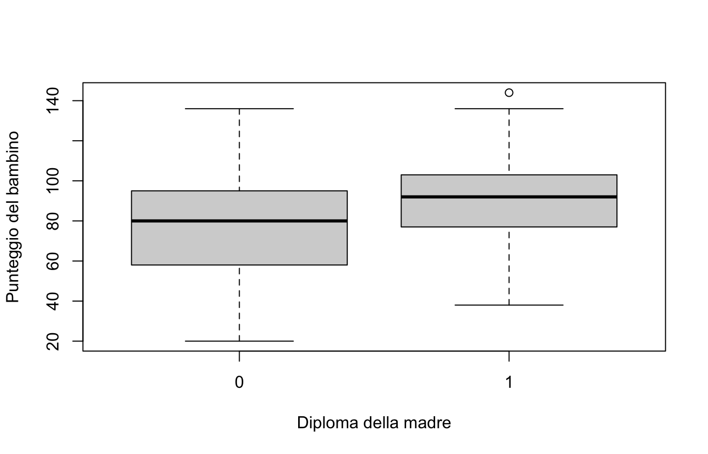
(Con un predittore factor, plot() produce automaticamente dei boxplot.)
coef(m2)
(Intercept) mom_hs1
77.54839 11.77126
L’equazione di regressione è
\[
\hat{Y} = 77.55 + 11.77 D
\]
L’interpretazione, con una dummy, è in termini di medie di gruppo (cfr. Sezione 2.1.1):
\(\beta_0 = 77.55\): punteggio medio previsto quando \(D = 0\), cioè la media dei bambini con madre non diplomata;
\(\beta_1 = 11.77\): la differenza tra le medie dei due gruppi. I figli di madri diplomate ottengono in media 11.77 punti in più (\(77.55 + 11.77 = 89.32\)).
summary(m2)
Call:
lm(formula = kid_score ~ mom_hs, data = kidiq)
Residuals:
Min 1Q Median 3Q Max
-57.55 -13.32 2.68 14.68 58.45
Coefficients:
Estimate Std. Error t value Pr(>|t|)
(Intercept) 77.548 2.059 37.670 < 2e-16 ***
mom_hs1 11.771 2.322 5.069 5.96e-07 ***
---
Signif. codes: 0 '***' 0.001 '**' 0.01 '*' 0.05 '.' 0.1 ' ' 1
Residual standard error: 19.85 on 432 degrees of freedom
Multiple R-squared: 0.05613, Adjusted R-squared: 0.05394
F-statistic: 25.69 on 1 and 432 DF, p-value: 5.957e-07
Il test \(t\) su mom_hs1 ci dice che la differenza tra i due gruppi è statisticamente significativa, ma \(R^2 \approx 0.056\): il diploma della madre, da solo, spiega poco della variabilità dei punteggi.
✏️ Esercizio 6 — Regressione e medie di gruppo
Verificate “a mano” l’interpretazione dei coefficienti di m2:
calcolate la media di kid_score separatamente per i due gruppi di mom_hs (suggerimento: tapply());
confrontate le medie ottenute con i coefficienti del modello;
(extra) confrontate l’output di summary(m2) con quello di un test \(t\) a varianze uguali: t.test(kid_score ~ mom_hs, data = kidiq, var.equal = TRUE). Che cosa notate?
Soluzione — Esercizio 6
medie <-tapply(kidiq$kid_score, kidiq$mom_hs, mean)medie
0 1
77.54839 89.31965
medie[2] - medie[1]
1
11.77126
coef(m2)
(Intercept) mom_hs1
77.54839 11.77126
La media del gruppo 0 (77.55) coincide con l’intercetta e la differenza tra le medie (11.77) coincide con il coefficiente della dummy.
t.test(kid_score ~ mom_hs, data = kidiq, var.equal =TRUE)
Two Sample t-test
data: kid_score by mom_hs
t = -5.0685, df = 432, p-value = 5.957e-07
alternative hypothesis: true difference in means between group 0 and group 1 is not equal to 0
95 percent confidence interval:
-16.335924 -7.206598
sample estimates:
mean in group 0 mean in group 1
77.54839 89.31965
La statistica \(t\) e il p-value sono identici (a parte il segno, che dipende solo dall’ordine dei gruppi) a quelli del coefficiente mom_hs1 nel summary(m2): il test \(t\) per due gruppi indipendenti è un modello lineare con un predittore dicotomico. Molti dei test “classici” sono casi particolari del modello lineare.
3 La regressione multipla
Quando il modello ha più predittori, la formulazione può essere scritta:
Quando il modello ha più predittori (quantitativi e/o categoriali) e una sola variabile dipendente quantitativa \(Y\), si parla di regressione lineare multipla.
3.1 Un esempio con due predittori
Consideriamo un modello che predice il punteggio del bambino a partire dal QI e dal livello di istruzione della madre. In R basta sommare i predittori nella formula:
m3 <-lm(kid_score ~ mom_iq + mom_hs, data = kidiq)coef(m3)
Poiché \(D \in \{0, 1\}\), graficamente otteniamo due rette parallele: stessa pendenza (0.56), intercette diverse (25.73 per le madri non diplomate, \(25.73 +
5.95 = 31.68\) per le diplomate):
Codice del grafico
g <- kidiq$mom_hscols <-c("#F8766D", "#00BFC4") # non diplomata, diplomataxr <-range(kidiq$mom_iq)yr <-range(kidiq$kid_score)dx <-lapply(levels(g), function(l) density(kidiq$mom_iq[g == l]))dy <-lapply(levels(g), function(l) density(kidiq$kid_score[g == l]))layout(matrix(c(2, 4, 1, 3), 2, 2, byrow =TRUE),widths =c(4, 1.2), heights =c(1.2, 4))# 1 — scatter dei dati + le due rette parallele di m3par(mar =c(4, 4, 0.5, 0.5))plot(kidiq$mom_iq, kidiq$kid_score, pch =19, col =adjustcolor(cols[g], 0.3),xlim = xr, ylim = yr, xlab ="QI della madre", ylab ="Punteggio del bambino")cf <-coef(m3)abline(cf[1], cf[2], col = cols[1], lwd =3)abline(cf[1] + cf[3], cf[2], col = cols[2], lwd =3)# 2 — distribuzione del QI (in alto), per gruppopar(mar =c(0, 4, 0.5, 0.5))plot(NA, xlim = xr, ylim =c(0, max(sapply(dx, function(d) max(d$y)))),axes =FALSE, xlab ="", ylab ="")for (i in1:2) polygon(dx[[i]], col =adjustcolor(cols[i], 0.4), border = cols[i])# 3 — distribuzione del punteggio (a destra), per gruppo: densità ruotatapar(mar =c(4, 0, 0.5, 0.5))plot(NA, ylim = yr, xlim =c(0, max(sapply(dy, function(d) max(d$y)))),axes =FALSE, xlab ="", ylab ="")for (i in1:2) polygon(dy[[i]]$y, dy[[i]]$x, col =adjustcolor(cols[i], 0.4), border = cols[i])# 4 — legendapar(mar =c(0, 0, 0, 0)); plot.new()legend("center", fill =adjustcolor(cols, 0.5), border = cols, bty ="n",legend =c("non diplomata", "diplomata"))
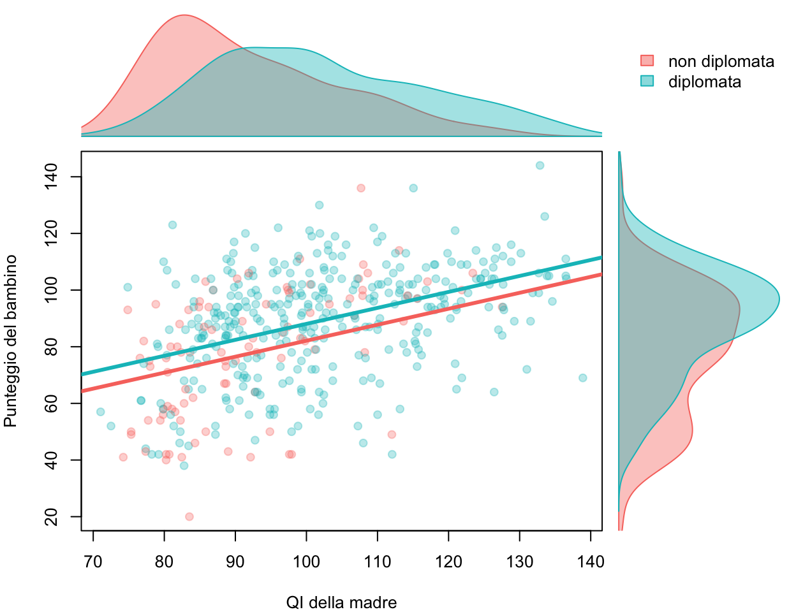
Codice del grafico
layout(1)
Sui margini si leggono le distribuzioni dei due gruppi: le madri diplomate (azzurro) hanno QI tendenzialmente più alti (margine in alto) e figli con punteggi più alti (margine a destra). Ogni coefficiente esprime l’effetto di quel predittore a parità degli altri. Ad esempio, \(\beta_1 = 0.56\) è l’effetto del QI della madre a parità di livello di istruzione.
3.2 L’analisi degli effetti
summary(m3)
Call:
lm(formula = kid_score ~ mom_iq + mom_hs, data = kidiq)
Residuals:
Min 1Q Median 3Q Max
-52.873 -12.663 2.404 11.356 49.545
Coefficients:
Estimate Std. Error t value Pr(>|t|)
(Intercept) 25.73154 5.87521 4.380 1.49e-05 ***
mom_iq 0.56391 0.06057 9.309 < 2e-16 ***
mom_hs1 5.95012 2.21181 2.690 0.00742 **
---
Signif. codes: 0 '***' 0.001 '**' 0.01 '*' 0.05 '.' 0.1 ' ' 1
Residual standard error: 18.14 on 431 degrees of freedom
Multiple R-squared: 0.2141, Adjusted R-squared: 0.2105
F-statistic: 58.72 on 2 and 431 DF, p-value: < 2.2e-16
Con anova() otteniamo la scomposizione della variabilità spiegata dai singoli effetti del modello:
anova(m3); a <-anova(m3)
Analysis of Variance Table
Response: kid_score
Df Sum Sq Mean Sq F value Pr(>F)
mom_iq 1 36249 36249 110.2114 < 2.2e-16 ***
mom_hs 1 2380 2380 7.2369 0.007419 **
Residuals 431 141757 329
---
Signif. codes: 0 '***' 0.001 '**' 0.01 '*' 0.05 '.' 0.1 ' ' 1
Entrambi gli effetti risultano significativi e il modello spiega circa il 21.4% della variabilità dei punteggi (era il 20.1% con il solo QI: l’istruzione della madre aggiunge poco, una volta tenuto conto del QI).
3.2.1 La variabilità spiegata dai singoli effetti: \(\eta^2\)
Oltre all’\(R^2\) complessivo (1), dalla tabella ANOVA possiamo stimare la proporzione di variabilità spiegata da ciascun effetto, detta \(\eta^2\): il rapporto tra la devianza dell’effetto e la devianza totale.
Il coefficiente di mom_iq passa da 0.610 a 0.604: praticamente invariato (QI ed età della madre sono poco correlati, quindi i loro effetti non si “rubano” variabilità a vicenda).
\(R^2\) passa da 0.201 a 0.204: l’età della madre, a parità di QI, aggiunge pochissimo.
plot(allEffects(m5))
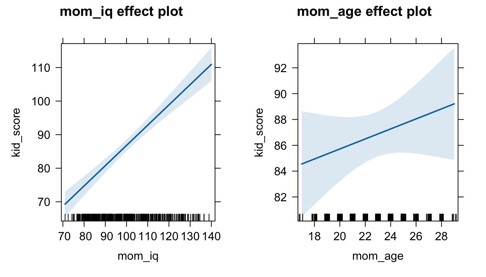
Notate la diversa ampiezza delle bande di confidenza: l’effetto del QI è stimato con molta più precisione di quello dell’età.
4 Gli effetti di interazione
Nel modello m3 abbiamo imposto che l’effetto del QI fosse lo stesso nei due gruppi di madri (rette parallele). Ma potrebbe non essere così: introduciamo allora l’interazione tra i predittori, che in R si indica con *:
m4 <-lm(kid_score ~ mom_iq * mom_hs, data = kidiq)coef(m4)
La formula mom_iq * mom_hs è una scorciatoia per mom_iq + mom_hs + mom_iq:mom_hs: effetti principali più interazione. L’equazione di regressione diventa
\[
\hat{Y} = -11.48 + 0.97 X + 51.27 D - 0.48\, DX
\]
Il termine \(DX\) (prodotto tra dummy e QI) permette alle due rette di avere pendenze diverse:
Codice del grafico
g <- kidiq$mom_hscols <-c("#F8766D", "#00BFC4") # non diplomata, diplomataxr <-range(kidiq$mom_iq)yr <-range(kidiq$kid_score)dx <-lapply(levels(g), function(l) density(kidiq$mom_iq[g == l]))dy <-lapply(levels(g), function(l) density(kidiq$kid_score[g == l]))layout(matrix(c(2, 4, 1, 3), 2, 2, byrow =TRUE),widths =c(4, 1.2), heights =c(1.2, 4))# 1 — scatter + le due rette di m4 (pendenze diverse)par(mar =c(4, 4, 0.5, 0.5))plot(kidiq$mom_iq, kidiq$kid_score, pch =19, col =adjustcolor(cols[g], 0.3),xlim = xr, ylim = yr, xlab ="QI della madre", ylab ="Punteggio del bambino")cf <-coef(m4)abline(cf[1], cf[2], col = cols[1], lwd =3) # non dipl. (D = 0)abline(cf[1] + cf[3], cf[2] + cf[4], col = cols[2], lwd =3) # dipl. (D = 1)# 2 — distribuzione del QI (in alto), per gruppopar(mar =c(0, 4, 0.5, 0.5))plot(NA, xlim = xr, ylim =c(0, max(sapply(dx, function(d) max(d$y)))),axes =FALSE, xlab ="", ylab ="")for (i in1:2) polygon(dx[[i]], col =adjustcolor(cols[i], 0.4), border = cols[i])# 3 — distribuzione del punteggio (a destra), per gruppo: densità ruotatapar(mar =c(4, 0, 0.5, 0.5))plot(NA, ylim = yr, xlim =c(0, max(sapply(dy, function(d) max(d$y)))),axes =FALSE, xlab ="", ylab ="")for (i in1:2) polygon(dy[[i]]$y, dy[[i]]$x, col =adjustcolor(cols[i], 0.4), border = cols[i])# 4 — legendapar(mar =c(0, 0, 0, 0)); plot.new()legend("center", fill =adjustcolor(cols, 0.5), border = cols, bty ="n",legend =c("non diplomata", "diplomata"))
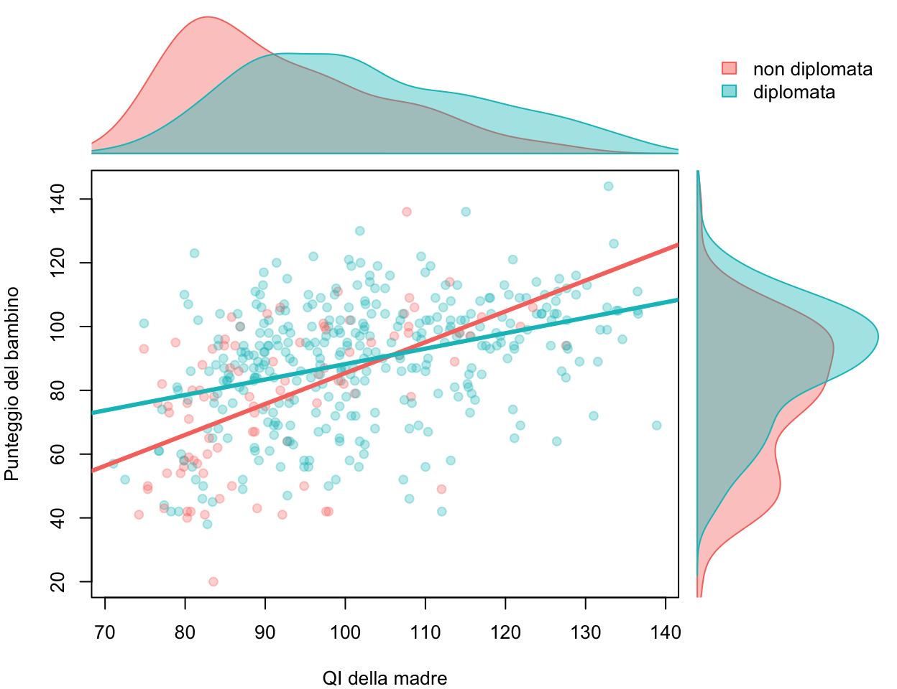
Sostituendo i valori di \(D\) si ottengono le equazioni delle due rette:
L’interpretazione: tra le madri non diplomate il QI “pesa” molto di più (quasi un punto per punto di QI), mentre tra le diplomate la relazione è circa la metà. Con un’interazione, gli effetti principali non si interpretano più da soli: l’effetto di un predittore dipende dal livello dell’altro.
Quando si incrociano le due rette? Scriviamole con i coefficienti del modello, dove \(\beta_2\) è il coefficiente della dummy (mom_hs1 = 51.27) e \(\beta_3\) quello dell’interazione (mom_iq:mom_hs1 = −0.48): \[\hat y_{\text{non dipl}}(X) = \beta_0 + \beta_1 X, \qquad \hat y_{\text{dipl}}(X) = (\beta_0+\beta_2) + (\beta_1+\beta_3)\,X.\] Si incrociano dove la loro differenza è zero. Facendo la differenza (diplomate − non diplomate), i termini \(\beta_0\) e \(\beta_1 X\) si cancellano: \[\hat y_{\text{dipl}} - \hat y_{\text{non dipl}} = \beta_2 + \beta_3 X \qquad (\text{qui } 51.27 - 0.48\,X),\] che è l’effetto del diploma in funzione del QI. Posto uguale a zero: \[\beta_2 + \beta_3 X = 0 \;\;\Longrightarrow\;\; X = -\frac{\beta_2}{\beta_3} = \frac{51.27}{0.48} \approx 106,\] cioè il rapporto tra il coefficiente della dummy e quello dell’interazione, cambiato di segno. Sotto QI ≈ 106 i figli di madri diplomate hanno punteggi attesi più alti, sopra la relazione si inverte — anche se, guardando il grafico, le due rette oltre quel punto sono molto vicine e le bande di confidenza si sovrappongono.
5 La valutazione dell’adattamento
5.1 Casi anomali e casi influenti
Non tutte le osservazioni “strane” sono uguali.
outlier: un’osservazione con \(Y\) anomalo rispetto a ciò che il modello prevede per il suo \(X\) (residuo grande);
caso a leva alta (leverage): un’osservazione con \(X\) estremo, lontano dal grosso dei dati — potenzialmente influente;
caso influente: un’osservazione che, da sola, cambia sensibilmente le stime del modello. Tipicamente: leva alta e residuo grande insieme.
Vediamolo con dati simulati: in ciascun pannello aggiungiamo ai dati (grigi) un solo punto rosso e confrontiamo la retta stimata con il punto (rossa, continua) e senza (nera, tratteggiata):
Codice
set.seed(20)x <-rnorm(25, 10, 1.5)y <-2+ x +rnorm(25, 0, 1)extra <-rbind(c(10, 22), # outlier: X centrale, Y anomaloc(18, 20), # leva alta: X estremo, Y coerentec(18, 9)) # outlier influente: X estremo, Y anomalotitoli <-c("Outlier", "Caso a leva alta", "Outlier influente")par(mfrow =c(1, 3), mar =c(4, 4, 3, 1))for (i in1:3) { xx <-c(x, extra[i, 1]); yy <-c(y, extra[i, 2])plot(xx, yy, pch =19, col =c(rep("grey60", 25), "red"),xlab ="X", ylab ="Y", main = titoli[i])abline(lm(y ~ x), lty =2, lwd =2) # senza il puntoabline(lm(yy ~ xx), col ="red", lwd =2) # con il punto}
l’outlier con \(X\) centrale sposta un po’ l’intercetta ma quasi per niente la pendenza;
il caso a leva alta ma coerente con la retta non cambia;
l’outlier influente (X estremo + Y anomalo) ruota vistosamente la retta.
Un modo diretto di vedere l’influenza è il leave-one-out: si rifà la regressione togliendo un’osservazione per volta e si guarda quanto si sposta la retta. Se la retta salta, quel punto è influente; se resta ferma, non lo è.
Codice del grafico
par(mfrow =c(1, 2), mar =c(4, 4, 3, 1))# --- sinistra: dati simulati con un caso influente (lo stesso del pannello sopra) ---set.seed(20)xinf <-rnorm(25, 10, 1.5)yinf <-2+ xinf +rnorm(25, 0, 1)xinf <-c(xinf, 15); yinf <-c(yinf, 9) # outlier influente: X estremo, Y anomaloplot(xinf, yinf, pch =19, col =c(rep("grey60", 25), "red"),xlab ="X", ylab ="Y", main ="con un caso influente")for (i inseq_along(xinf)) # una retta per ogni punto toltoabline(lm(yinf[-i] ~ xinf[-i]), col =adjustcolor("blue", 0.25))abline(lm(yinf[-26] ~ xinf[-26]), col ="darkgreen", lwd =2) # senza il punto rossoabline(lm(yinf ~ xinf), col ="black", lwd =2) # con tutti i datilegend("topleft", lwd =2, col =c("black", "darkgreen"), bty ="n", cex =0.85,legend =c("tutti i dati", "senza il rosso"))m0 <-lm(yinf ~ xinf)# --- destra: distanza di Cookplot(cooks.distance(m0), type ="h", col ="grey40", lwd =4,xlab ="osservazione", ylab ="distanza di Cook",main ="distanza di Cook")
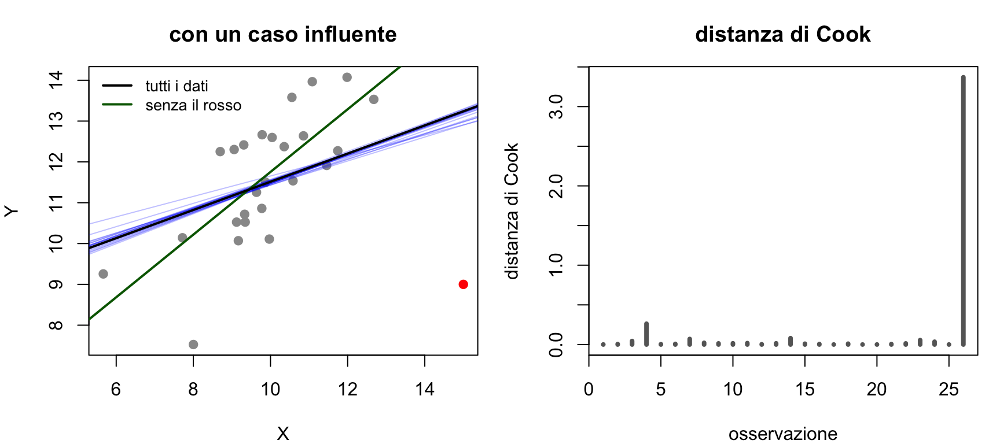
A sinistra (dati simulati) il leave-one-out rende visibile l’influenza: la retta stimata senza il punto rosso (verde) si stacca dal fascio di tutte le altre, che invece restano ammucchiate. È lo stesso outlier influente del pannello qui sopra.
A destra c’è la versione quantitativa della stessa idea: la distanza di Cook misura, per ogni osservazione, di quanto cambierebbero le stime togliendola.
5.2 Il predictive check
Un altro metodo per valutare l’adattamento di un modello consiste nel simulare dati dal modello e confrontarli con i dati osservati:
se il modello è buono, i dati simulati dovrebbero assomigliare a quelli osservati;
viceversa, se il modello genera dati molto diversi da quelli osservati, non è un buon modello per quei dati.
Il pacchetto performance rende l’operazione immediata:
library(performance)check_predictions(m4)
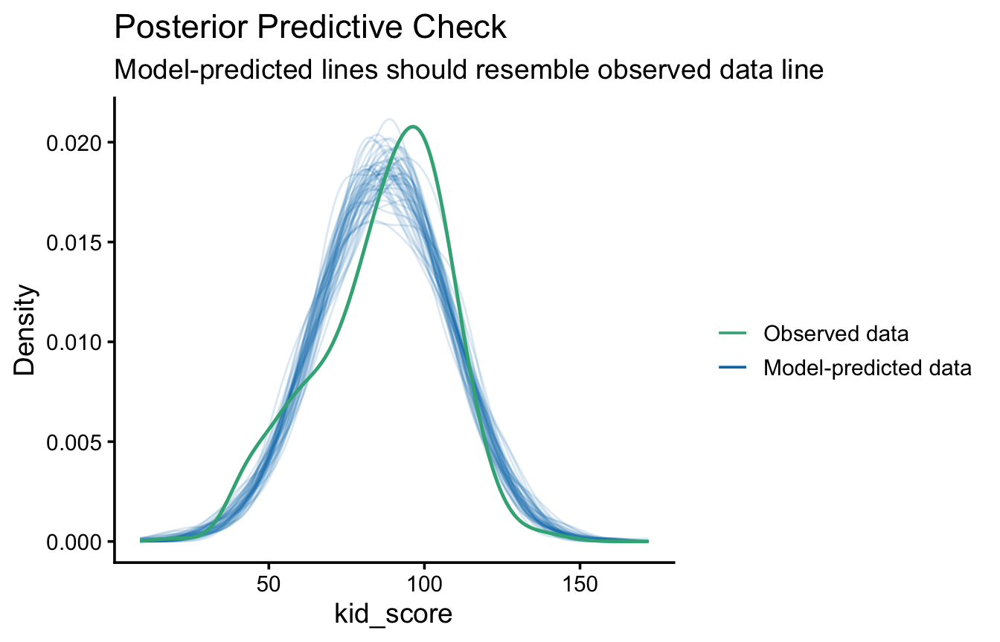
Ogni curva sottile è la distribuzione di un dataset simulato dal modello; la curva in evidenza è quella dei dati osservati. Qui le curve simulate ricalcano abbastanza bene quella osservata: il modello riproduce in modo ragionevole la forma della distribuzione dei punteggi.
6 La verosimiglianza (likelihood)
Prima di confrontare modelli tra loro ci serve capire cosa stiamo confrontando: la verosimiglianza (likelihood).
6.1 Dal campione alla verosimiglianza
Abbiamo un campione di dati.
Ipotizziamo che provenga da una certa distribuzione — il “processo generatore dei dati” — per esempio una normale con \(\mu = 10\) e \(\sigma = 1.5\).
Con quella distribuzione, calcoliamo la densità di ciascun punto osservato.
y <-c(7.9, 9.4, 10.1, 10.8, 12.3) # il nostro piccolo campionednorm(y, mean =10, sd =1.5) # densità di ogni punto se Y ~ N(10, 1.5²)
curve(dnorm(x, 10, 1.5), from =5, to =15, lwd =2, xlab ="y", ylab ="f(y)",ylim =c(0, 0.3))d <-dnorm(y, 10, 1.5)segments(y, 0, y, d, col ="red", lty =2)points(y, rep(0, length(y)), pch =19)points(y, d, pch =19, col ="red")text(y, d +0.015, round(d, 2), col ="red", cex =0.8)
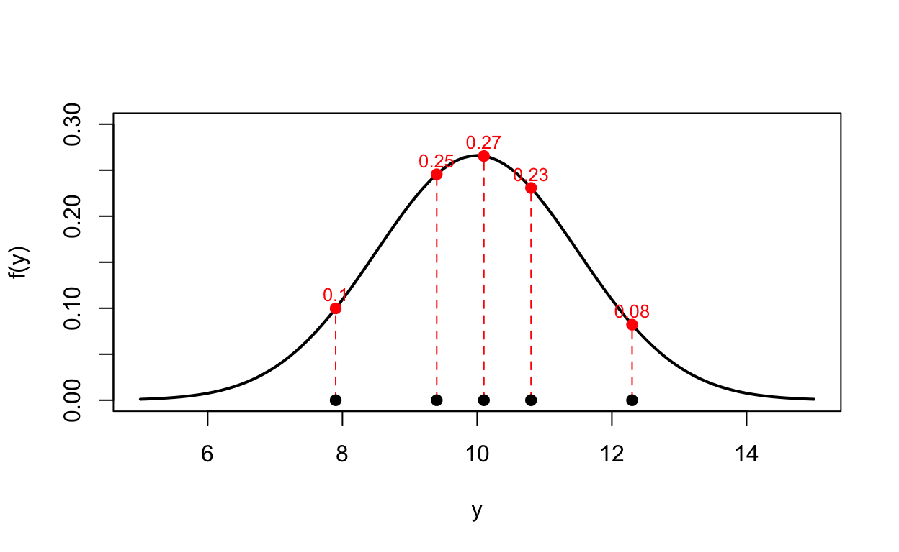
Le cinque densità ci dicono quanto ciascun punto è “plausibile” sotto la distribuzione ipotizzata. Ma il campione è uno solo: i punti sono stati osservati insieme, sono eventi congiunti — e la probabilità di eventi congiunti (e indipendenti) si ottiene moltiplicando. La verosimiglianza del campione sotto i parametri \(\theta\) è quindi il prodotto delle densità:
Il prodotto di tante densità è un numero piccolissimo (con 434 osservazioni sarebbe ingestibile): per questo si lavora quasi sempre con la log-verosimiglianza\(\log\mathcal{L}\), che trasforma il prodotto in una somma. Tenetela d’occhio: è l’ingrediente di AIC e BIC nel prossimo capitolo.
6.2 La funzione di verosimiglianza
Il numero appena calcolato dipende dall’ipotesi che abbiamo fatto (\(\mu = 10\)). Ma potevamo ipotizzare distribuzioni diverse: ciascuna assegna al campione una verosimiglianza diversa.
Codice del grafico
curve(dnorm(x, 10.1, 1.5), from =4, to =16, lwd =2, xlab ="y", ylab ="f(y)")curve(dnorm(x, 8.5, 1.5), add =TRUE, lwd =2, col ="blue")curve(dnorm(x, 11.5, 1.5), add =TRUE, lwd =2, col ="red")points(y, rep(0, length(y)), pch =19)L3 <-sapply(c(10.1, 8.5, 11.5), function(m) prod(dnorm(y, m, 1.5)))legend("topleft", lwd =2, col =c("black", "blue", "red"), bty ="n", cex =0.9,legend =sprintf("mu = %.1f L = %.5f", c(10.1, 8.5, 11.5), L3))
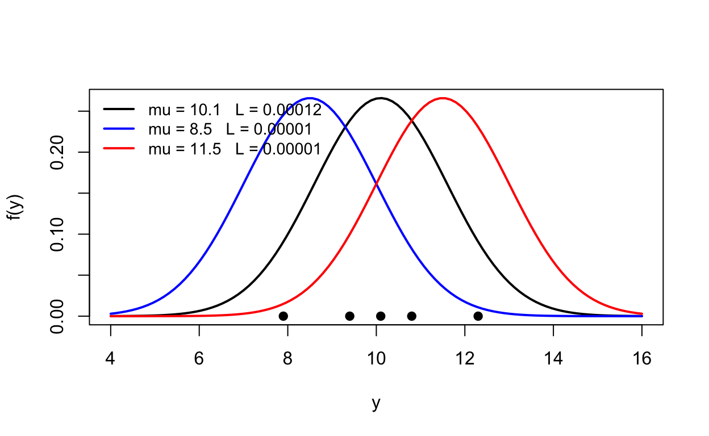
L’idea allora è: proviamo tutti i valori candidati di \(\mu\) (con \(\sigma\) fissata, per semplicità), calcoliamo la verosimiglianza del campione per ciascuno, e disegniamo i risultati. Quella che otteniamo è la funzione di verosimiglianza\(\mathcal{L}(\mu)\):
mu_griglia <-seq(7, 13, by =0.05)L <-sapply(mu_griglia, function(m) prod(dnorm(y, m, 1.5)))plot(mu_griglia, L, type ="l", lwd =2,xlab =expression(mu), ylab ="verosimiglianza del campione")abline(v =mean(y), lty =2, col ="red")
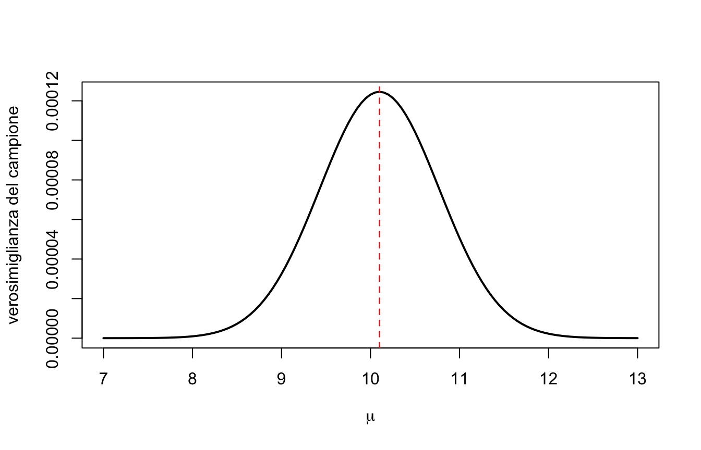
La curva ha un massimo, e il massimo cade esattamente sulla media campionaria (linea rossa tratteggiata): tra tutte le normali candidate, quella centrata su \(\bar{y}\) è la più compatibile con i dati osservati.
Importante
Attenzione alla direzione: la verosimiglianza misura quanto sono plausibili i dati dato un valore dei parametri, non quanto è probabile un parametro dati i dati. Per questo \(\mathcal{L}(\mu)\) non è una distribuzione di probabilità: è una funzione che ordina i valori dei parametri per compatibilità con il campione.
6.3 A che cosa serve
Ottimizzare. Cercare il valore dei parametri che la massimizza: è il metodo di massima verosimiglianza (Maximum Likelihood Estimation, MLE), uno dei metodi di stima più usati.
Confrontare modelli. Modelli diversi assegnano agli stessi dati verosimiglianze diverse: confrontarle ci dice quale modello “spiega” meglio i dati. È la base di AIC e BIC (prossimo capitolo).
Aggiornare le credenze. Nell’inferenza bayesiana la verosimiglianza è il fattore che aggiorna le priors in posteriors.
6.4 Il legame con l’assunzione di normalità
E il modello lineare? L’assunzione di normalità (Sezione 1.4) dice che
cioè: per ogni osservazione, una campana normale centrata sul valore previsto dalla retta (le “campane” della Sezione 1.3). La verosimiglianza del modello è allora il prodotto di quelle densità normali:
Ricalcoliamo “a mano” la log-verosimiglianza di m1 come somma dei log delle densità normali centrate sui valori previsti, e confrontiamola con quella che R calcola con logLik():
Ogni osservazione ci mette un termine: la log-densità del suo punteggio sotto la normale centrata sul suo valore previsto. Eccone i primi cinque, uno per bambino:
Ogni riga è un’osservazione: dove il punteggio è vicino al valore previsto (mu_hat) la log_dens è alta. Sommando tutti i 434 termini, uno per bambino, si ottiene la log-verosimiglianza vista sopra.
# funzione RlogLik(m1) # df = n parametri stimati
'log Lik.' -1875.608 (df=3)
Importante
L’assunzione di normalità definisce la funzione di verosimiglianza del modello. Assumere la normalità significa decidere che i dati vanno valutati con dist. normali centrate sulla retta: è questa la verosimiglianza che logLik() calcola, e che AIC e BIC useranno nel prossimo capitolo come metro di paragone. Cambiare assunzione distribuzionale (per esempio una Poisson per dei conteggi) significa cambiare verosimiglianza: è l’idea alla base dei modelli lineari generalizzati.
✏️ Esercizio 10 — La verosimiglianza all’opera
Usando il campione y <- c(7.9, 9.4, 10.1, 10.8, 12.3) (con \(\sigma = 1.5\) fissa):
calcolate la log-verosimiglianza per \(\mu = 9\), \(\mu = 10\) e \(\mu = 11\): quale ipotesi è più sostenuta dai dati?
cercate il massimo della funzione di verosimiglianza su una griglia fine di valori di \(\mu\) (mu_griglia <- seq(8, 12, by = 0.001): coincide con mean(y)?
ripetete il “calcolo a mano” della log-verosimiglianza per il modello m_age dell’Esercizio 4 (kid_score ~ mom_age) e confrontate con logLik(m_age).
Soluzione — Esercizio 10
sapply(c(9, 10, 11), function(m) sum(dnorm(y, m, 1.5, log =TRUE)))
[1] -10.335352 -9.002018 -9.890907
mu_griglia <-seq(8, 12, by =0.001)ll <-sapply(mu_griglia, function(m) sum(dnorm(y, m, 1.5, log =TRUE)))c(massimo = mu_griglia[which.max(ll)], media =mean(y))
La log-verosimiglianza più alta è quella di \(\mu = 10\): tra le tre ipotesi è la più vicina alla media campionaria.
Il massimo della griglia coincide con mean(y) = 10.1: per la normale (con \(\sigma\) nota) si può dimostrare che lo stimatore di massima verosimiglianza di \(\mu\) è proprio la media campionaria.
I due valori coincidono: logLik() non fa altro che sommare i log delle densità normali centrate sui valori previsti dal modello.
7 Confronto e selezione di modelli
All models are wrong, but some are useful. — George E. P. Box
7.1 I problemi
Sembra semplice, ma:
possono esistere molti modelli che spiegano gli stessi dati;
le variazioni casuali rendono difficile identificare il modello;
il modello vero potrebbe non essere tra quelli effettivamente messi alla prova.
Un obiettivo realistico, quindi, è identificare il modello che rappresenta la migliore approssimazione al modello vero.
7.2 L’overfitting
C’è una tensione fondamentale tra due proprietà di un modello:
la bontà di adattamento (goodness of fit): quanto bene il modello riproduce i dati osservati — e questa cresce sempre all’aumentare della complessità del modello;
la generalizzabilità: quanto bene il modello prevede dati nuovi — e questa cresce fino a un certo punto, poi peggiora (curva a U rovesciata; Pitt, Myung & Zhang, 2002).
Un modello troppo complesso finisce per adattarsi anche al rumore dei dati: è il fenomeno dell’overfitting.
Codice del grafico
cx <-seq(0, 1, length.out =200)fit <-1-exp(-4* cx) # adattamento: cresce sempregen <-1-exp(-4* cx) -1.1* cx^2# generalizzabilità: sale, poi scendepicco <- cx[which.max(gen)]plot(cx, fit, type ="n", ylim =c(0, 1.08), xaxt ="n", yaxt ="n",xlab ="numero di parametri", ylab ="prestazione del modello")rect(picco, -0.1, 1.1, 1.2, col =adjustcolor("grey60", 0.25), border =NA)lines(cx, fit, lwd =3)lines(cx, gen, lwd =3, col ="blue")abline(v = picco, lty =3)text(0.66, 1.03, "adattamento ai dati osservati")text(0.70, 0.48, "previsione su dati nuovi", col ="blue")text(0.86, 0.10, "overfitting", col ="grey30", font =3)
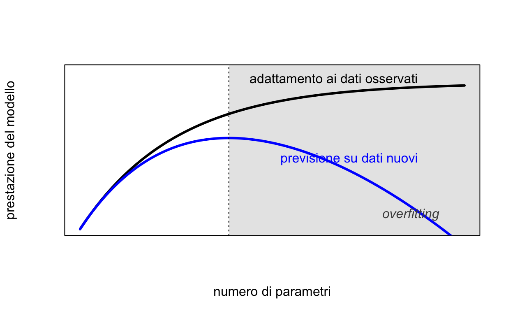
La zona “buona” sta attorno alla linea tratteggiata: oltre (area grigia), il modello continua a migliorare sui dati osservati ma peggiora su dati nuovi (Pitt, Myung & Zhang, 2002).
…fitting is easy; prediction is hard. — Richard McElreath
Vediamolo con un esempio classico (McElreath, 2023): volume cerebrale e massa corporea di sette specie di ominidi. Con 7 punti, un polinomio di grado 6 passa esattamente per tutti i punti:
Notate la scala verticale dei pannelli, che cambia da pannello a pannello: dal grado 4 in su la curva, pur di passare per i punti, “esplode” tra un’osservazione e l’altra.
Il polinomio di grado 6 ha \(R^2 = 1\) ma, tra un punto e l’altro, arriva a prevedere un volume cranico negativo: si è adattato perfettamente ai dati e ha perso ogni capacità di generalizzare. Massimizzare il fit non è il criterio giusto per scegliere un modello: servono criteri che tengano conto anche della complessità.
7.3 Il confronto mediante ANOVA
Costruiamo una serie di modelli per i dati kidiq, dal modello nullo (solo intercetta) al modello con interazione:
m0 <-lm(kid_score ~1, data = kidiq)m1 <-lm(kid_score ~ mom_iq, data = kidiq)m2 <-lm(kid_score ~ mom_hs, data = kidiq)m3 <-lm(kid_score ~ mom_iq + mom_hs, data = kidiq)m4 <-lm(kid_score ~ mom_iq * mom_hs, data = kidiq)anova(m0, m1, m2, m3, m4)
Analysis of Variance Table
Model 1: kid_score ~ 1
Model 2: kid_score ~ mom_iq
Model 3: kid_score ~ mom_hs
Model 4: kid_score ~ mom_iq + mom_hs
Model 5: kid_score ~ mom_iq * mom_hs
Res.Df RSS Df Sum of Sq F Pr(>F)
1 433 180386
2 432 144137 1 36249 112.2346 < 2.2e-16 ***
3 432 170261 0 -26124
4 431 141757 1 28504 88.2552 < 2.2e-16 ***
5 430 138879 1 2878 8.9123 0.002994 **
---
Signif. codes: 0 '***' 0.001 '**' 0.01 '*' 0.05 '.' 0.1 ' ' 1
anova() confronta ogni modello con il precedente tramite test \(F\): l’aggiunta di parametri riduce significativamente la devianza residua?
Si legge riga per riga, e ogni riga (dalla seconda) confronta quel modello con quello della riga sopra. Colonna per colonna:
Res.Df — i gradi di libertà residui del modello (\(n\) meno il numero di parametri): partono da 433 (solo intercetta) e calano di 1 a ogni parametro aggiunto.
RSS — la devianza residua \(\text{SS}_E\) del modello. Cala sempre man mano che si aggiungono predittori (più parametri ⇒ fit migliore): 180386 → 144137 → …
Df — quanti parametri si sono aggiunti rispetto alla riga precedente (qui uno per volta).
Sum of Sq — di quanto è calata la RSS rispetto al modello precedente: è la devianza in più spiegata dal termine appena aggiunto. Per esempio, aggiungendo mom_iq al modello nullo: \(180386 - 144137 = 36249\).
F e Pr(>F) — il test \(F\) chiede se quel calo è più grande di quanto ci si aspetterebbe per caso: confronta la devianza spiegata in più (per parametro aggiunto) con la varianza residua usata come “rumore di fondo”. Attenzione: con più modelli, anova() usa come denominatore la varianza residua del modello più grande della tabella (l’ultimo), uguale per tutte le righe.
“Modello più grande” significa con più parametri, non “modello migliore”. Tra modelli annidati il più grande adatta sempre meglio i dati osservati (la RSS più piccola) e fornisce la stima meno distorta di \(\sigma^2\) — ed è per questo che anova() lo usa al denominatore — ma proprio perché adatta tutto, rumore compreso, può overfittare: per scegliere un modello servono criteri che penalizzano la complessità (AIC e BIC, più avanti).
La \(F\) della tabella, ricalcolata a mano
Verifichiamo che le F escano davvero così, e che il denominatore sia sempre quello di m4 (il modello più grande). Ricordiamo che deviance() di un lm è la sua devianza residua \(\text{SS}_E\).
# varianza residua del modello piu' grandesigma2 <-deviance(m4) /df.residual(m4) # RSS(m4) / gradi di liberta'# ogni passo annidato aggiunge 1 parametro (Df = 1), quindi# F = (calo di devianza / 1) / sigma2, con LO STESSO sigma2 al denominatore:c("m1 vs m0"= (deviance(m0) -deviance(m1)) / sigma2,"m3 vs m2"= (deviance(m2) -deviance(m3)) / sigma2,"m4 vs m3"= (deviance(m3) -deviance(m4)) / sigma2)
m1 vs m0 m3 vs m2 m4 vs m3
112.234623 88.255205 8.912313
Tornano identiche alla colonna F della tabella (112.2, 88.3, 8.9) — tutte con lo stesso denominatore sigma2 (la varianza residua di m4).
Avviso
Questo approccio funziona solo per modelli annidati (ogni modello deve essere un caso particolare del successivo). Guardate la terza riga: confrontando m2 con m1 otteniamo Df = 0 e una somma dei quadrati negativa — un confronto privo di senso, perché m1 e m2 non sono annidati (nessuno dei due contiene l’altro). R esegue il calcolo lo stesso: sta a noi accorgerci del problema.
7.4 AIC e BIC
Due indici molto usati per il confronto fra modelli sono AIC (Akaike Information Criterion; Akaike, 1974) e BIC (Bayesian Information Criterion; Schwarz, 1978):
dove \(\mathcal{L}\) è la verosimiglianza del modello (la Sezione 6), \(k\) il numero di parametri e \(n\) il numero di osservazioni. Entrambi premiano il fit (primo termine) e penalizzano la complessità (secondo termine): misurano l’efficienza del modello in termini di previsione dei dati, proprio quello che l’overfitting comprometteva.
Dati \(k\) valori di AIC/BIC per \(k\) modelli diversi, si preferisce il modello con il valore più basso. Due vantaggi pratici rispetto all’ANOVA: i modelli non devono essere annidati, e non c’è nessun p-value di mezzo.
Sia per AIC sia per BIC il modello preferito è m4, quello con l’interazione.
7.5 La quantificazione dell’evidenza
Un grande vantaggio di AIC/BIC è la possibilità di stimare la plausibilità relativa di un modello rispetto a un altro. Il calcolo dell’evidenza relativa (evidence ratio) è molto semplice:
sia \(\Delta\) la differenza tra i valori di AIC (o BIC) dei due modelli;
si calcola \(\ell = e^{\Delta/2}\).
Da dove viene \(e^{\Delta/2}\)?
L’AIC è \(\text{AIC} = -2\log\mathcal{L} + 2k\): la log-verosimiglianza messa su una certa scala (il fattore \(-2\)), più una penalità per i \(k\) parametri. Per tornare a una quantità in scala di verosimiglianza basta disfare quella scala: \[
\exp\!\left(-\frac{\text{AIC}}{2}\right) = \exp(\log\mathcal{L} - k) = \mathcal{L}\,e^{-k}.
\] Il \(\div 2\) annulla il \(-2\), l’exp annulla il log: resta la verosimiglianza massimizzata \(\mathcal{L}\), scontata di \(e^{-k}\) per la complessità — una verosimiglianza penalizzata.
L’evidenza relativa è semplicemente il rapporto di queste quantità per i due modelli: \[
\frac{\exp(-\text{AIC}_A/2)}{\exp(-\text{AIC}_B/2)}
= \exp\!\left(\frac{\text{AIC}_B-\text{AIC}_A}{2}\right) = e^{\Delta/2}.
\] Ecco perché si usa \(e^{\Delta/2}\): dice quante volte un modello è più plausibile dell’altro. Se i due avessero lo stesso numero di parametri le penalità si cancellerebbero e \(e^{\Delta/2}\) sarebbe esattamente il rapporto di verosimiglianza \(\mathcal{L}_A/\mathcal{L}_B\); con \(k\) diversi, è quel rapporto aggiustato per la differenza di complessità.
Confrontiamo ad esempio il modello con interazione (m4) con quello senza (m3):
(DAIC <-AIC(m3) -AIC(m4))
[1] 6.903268
exp(DAIC /2)
[1] 31.55191
(DBIC <-BIC(m3) -BIC(m4))
[1] 2.830223
exp(DBIC /2)
[1] 4.116947
Conclusione con AIC: il modello con interazione è circa 32 volte più plausibile di quello senza interazione.
Conclusione con BIC: il modello con interazione è circa 4 volte più plausibile di quello senza.
(Il BIC penalizza la complessità più severamente dell’AIC, da cui la differenza.)
7.6 Verosimiglianza relativa e pesi di Akaike
Possiamo estendere il ragionamento a tutti i modelli insieme, calcolando per ciascuno la verosimiglianza relativa rispetto al modello peggiore (qui il nullo):
Il modello m4 (kid_score ~ mom_iq * mom_hs) risulta circa \(2.19 \times 10^{23}\) volte più verosimile del modello nullo.
Infine, possiamo normalizzare le verosimiglianze relative per ottenere i pesi di Akaike, interpretabili come la probabilità di ciascun modello \(M_i\), dati i dati e l’insieme dei modelli considerati \(\mathcal{M}\):
Ogni cella riporta il logaritmo dell’evidenza del modello di riga rispetto al modello di colonna: valori positivi favoriscono il modello di riga (es. m4 vs m3: \(\log \ell = 3.5\), cioè \(\ell \approx 32\), come calcolato prima).
La stessa matrice si può leggere a colori:
Codice del grafico
logER <-log(ER)n <-nrow(logER)par(mar =c(4, 4, 3, 1))image(1:n, 1:n, t(logER[n:1, ]), col =hcl.colors(25, "Magenta", alpha = .8),axes =FALSE, xlab ="", ylab ="",main ="log evidenza relativa (riga vs colonna)")axis(1, at =1:n, labels =colnames(logER))axis(2, at =1:n, labels =rev(rownames(logER)), las =1)for (i in1:n) for (j in1:n)text(j, n +1- i, round(logER[i, j], 1), cex =1.2,col ="black")box()
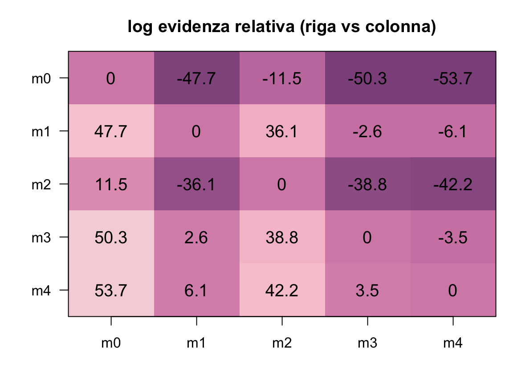
7.7 I vantaggi dei criteri di informazione
Riassumendo, rispetto al confronto basato su test e p-value:
si possono confrontare tutti i modelli che condividono lo stesso modello nullo, anche non annidati;
i valori di AIC/BIC calcolati sono indipendenti dall’ordine e dal numero dei modelli considerati;
evidenze relative e pesi di Akaike danno al lettore un quadro molto più ricco dei meriti relativi dei modelli in competizione, quantificando la fiducia statistica nel modello con l’AIC più basso (Burnham & Anderson, 2002; Wagenmakers & Farrell, 2004).
Esempio di frase per un articolo: “il modello m4 risulta circa \(2.19 \times
10^{23}\) volte più verosimile del modello nullo, con peso di Akaike \(w = 0.97\) nell’insieme dei cinque modelli considerati”.
✏️ Esercizio 11 — Un’analisi completa
Mettiamo insieme tutto quello che abbiamo visto. Partendo dal modello m4 (kid_score ~ mom_iq * mom_hs), chiedetevi se vale la pena aggiungere le altre variabili disponibili:
stimate i modelli che aggiungono a m4: l’età della madre (mom_age); la condizione lavorativa (mom_work); entrambe;
costruite la tabella di confronto con AIC, delta e pesi di Akaike);
quale modello scegliete? Con quanta fiducia?
controllate la diagnostica e il predictive check del modello scelto;
df AIC delta w
mA 5 3745.086 0.0000000 0.49239740
mB 6 3745.934 0.8486496 0.32213197
mC 8 3747.997 2.9113243 0.11484966
mD 9 3748.970 3.8839180 0.07062097
Il modello più semplice mA resta il preferito (\(w \approx 0.49\)), seguito da mB (\(\Delta \approx 0.8\)): un delta sotto 2 indica che i due modelli sono sostanzialmente equivalenti, e in questi casi conviene la parsimonia. Né l’età né la condizione lavorativa della madre migliorano la capacità predittiva abbastanza da giustificare i parametri aggiuntivi.
par(mfrow =c(2, 2))plot(mA)
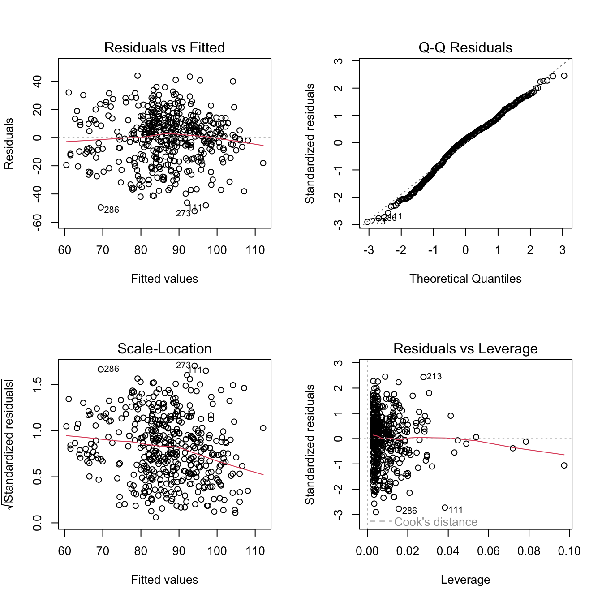
par(mfrow =c(1, 1))
check_predictions(mA)
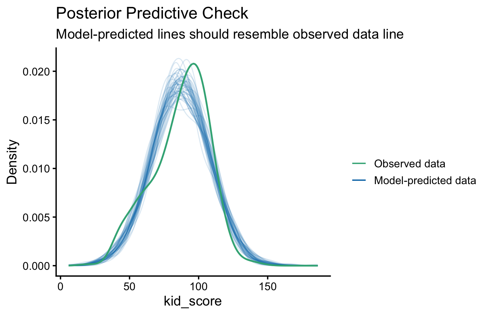
Possibile conclusione: “Tra i modelli considerati, quello con QI della madre, diploma e loro interazione risulta il migliore (AIC = 3745.1, \(w = 0.49\)); l’aggiunta di età e condizione lavorativa della madre non migliora la capacità predittiva (\(\Delta\text{AIC} < 4\), a fronte di più parametri). Il modello spiega circa il 23% della variabilità dei punteggi, con un errore medio di previsione di circa 18 punti.”
8 Riferimenti bibliografici
Testi di riferimento:
Fox, J. (1997). Applied Regression Analysis, Linear Models, and Related Methods. SAGE.
Fox, J. (2002). An R and S-Plus Companion to Applied Regression. SAGE.
Gelman, A., Hill, J., Vehtari, A. (2020). Regression and Other Stories. Cambridge University Press.
McElreath, R. (2020). Statistical rethinking: A Bayesian course with examples in R and Stan (2nd ed.). Chapman and Hall/CRC. https://doi.org/10.1201/9780429029608
In italiano:
Bortot, P., Ventura, L., Salvan, A. (2000). Inferenza Statistica: Applicazioni con S-PLUS e R. Cedam, Padova.
Grigoletto, M., Ventura, L., Pauli, F. (2017). Modello lineare. Teoria e applicazioni con R. Giappichelli, Torino.
Pastore, M. (2015). Analisi dei dati in psicologia (con applicazioni in R). Il Mulino, Bologna.
Sul confronto fra modelli:
Burnham, K. P., Anderson, D. R. (2002). Model Selection and Multimodel Inference. Springer.
Wagenmakers, E.-J., Farrell, S. (2004). AIC model selection using Akaike weights. Psychonomic Bulletin & Review, 11, 192–196.
Pacchetti R utilizzati in questa dispensa:
ggplot2 (Wickham, 2016) — grafici;
sjPlot (Lüdecke, 2023) — visualizzazione degli effetti dei modelli;
effects (Fox & Weisberg, 2019) — visualizzazione degli effetti dei modelli;
performance (Lüdecke et al., 2021) — predictive check e diagnostica;